第 5 章 Coding Agent 与通用 Agent
假设用户交给你三份含订单和退货记录的销售表，要你找出退货率最高的商品，并把依据写成报告。要让 Agent 接下这个开放任务，它得先摸清表头和单位，写程序合并数据，再用原始记录核对异常值。如果核对时发现两张表里的商品名称不同，它还得回头改程序。前几章分别介绍的上下文、记忆、知识库和工具，在这样的往返中各有用处。本章从编程任务入手，逐步把同样的工作方法推广到调研、内容创作与数据分析。
笔者对开放任务型通用 Agent 的架构判断是：以 Coding Agent 为执行核心，以文件系统为工作空间。 Coding Agent 能够编写、修改和运行代码；文件系统保存代码、数据、记忆与中间结果。两者配合，Agent 就能随任务需要编写程序，把结果保存为文件，供后续步骤继续使用。
代码生成是一种元能力：Agent 可以用代码组织已有工具，也可以针对新需求实现新的工具。代码还可以明确表达规则和推理步骤。例如，把“年龄大于 18 且已实名认证”写成 age > 18 and verified，就能用几组输入检查这条规则。已认证的两个人，一个 18 岁，一个 19 岁，只有后者应当通过。如果这位 19 岁的申请人尚未实名认证，也应当拒绝申请。
本章先介绍 Coding Agent 的基础工具，结合 OpenClaw 说明代码和文件系统如何支撑通用任务，再展开工作流程、Harness 与具体实现。随后从六个方向讨论代码生成的用途：思考、业务规则、多媒体、系统适配、生成式 UI 和 Agent 自举。
Coding Agent
Coding 是 Agent 的基础能力
笔者主张，把代码生成作为通用 Agent 的基础能力。 数学计算可以交给求解器，数据处理可以调用程序库，重复操作可以写成脚本；遇到新的格式或接口，Agent 还可以生成解析与适配逻辑。基础工具提供执行入口，代码负责把这些能力组合成任务所需的步骤。
考虑一个任务：“整理仓库中所有遗留的 TODO 注释，按优先级分类并生成 issue。”先搜索 TODO，读一读注释前后的代码，分清哪些只是写给自己的提醒，哪些需要另开任务。把文件名、行号和判断依据整理好，就可以在获得授权后创建 issue。若还要把分类结果保存到仓库，这时才需要写文件。类似任务还会用到运行命令、编辑代码等操作。教学中我们采用下面七种基础工具：
- Code Interpreter（代码解释器）：运行 Python 等代码，完成计算、数据处理和绘图；通过沙盒限制文件、网络和资源访问。
- Bash Shell（命令行终端）：执行构建、测试和文件处理等命令，返回输出与退出状态。
- 读文件工具：读取代码、配置、文档和日志，支持按范围获取内容。
- 写文件工具：创建文件或替换完整内容。
- 编辑文件工具：局部修改已有文件，适合维护与迭代。
- 搜索文件名工具（Glob）：按模式定位文件，例如用
**/*.py查找 Python 文件。 - 搜索文件内容工具（Grep）：查找文字或模式，并返回文件名、行号和匹配内容，例如定位某个函数的调用处。
这七个工具主要覆盖第四章中的感知与执行能力。协作、事件触发和用户沟通可以按应用需求继续接入。工具数量与接口粒度由实现决定：Shell 可以完成目录浏览、搜索和读取，独立的文件工具则能提供统一参数和结构化反馈。例如，Codex 可以通过命令执行工具读取与搜索，通过 apply_patch 表达文件修改；补丁把目标文件、修改位置和增删内容组织在一起，便于检查与回放。
先把任务缩小为“整理 Python 文件中的 TODO 清单”，看看工具如何配合：
| 步骤 | 操作 | 返回或产物 |
|---|---|---|
| 搜索注释 | Grep 搜索 TODO，用 **/*.py 限定范围 |
api.py 第 42 行：add rate limiting；db.py 第 15 行：migrate to PostgreSQL；test_api.py 第 8 行：add edge case tests |
| 整理清单 | Write 写入 TODO_LIST.md |
三条待办及各自的文件、行号和说明 |
| 反馈结果 | 告知用户清单位置与覆盖范围 | 共找到三条 Python 文件中的 TODO |
若用户还要求按模块统计并画柱状图，Agent 可以生成 Python 程序，交给 Code Interpreter 计算和绘图；若要判断优先级，则继续读取相关实现、测试或已有 issue，找到判断依据。
案例：从 Manus 到 OpenClaw——通用 Agent 的 Coding 内核
Manus、OpenClaw 等通用 Agent 可以在一次任务中查资料、操作电脑、运行代码。几项工作往往靠一段程序接起来：从接口取数，整理检索结果，做成图表和文档。以后再做同类任务，还能重用这段程序。
例如，程序库可以直接创建和修改采用 OOXML（Office Open XML）格式的 Word 文档和 PowerPoint 演示文稿；PDF 报告可以从 Markdown、HTML 或 LaTeX 渲染，数据分析与可视化可以用 Python 完成。稳定的网页操作也可以整理成可复用脚本，第九章会进一步讨论如何从一次成功的操作中提取可复用的步骤。
同一项操作已经有可用的 API 或命令行接口时，笔者优先选择代码调用。 结构化参数省去了反复截图、视觉定位和点击的开销，脚本还能保存、测试和复用。Computer Use 扩大了可操作软件的范围；把其中已经跑通、会反复执行的步骤固化为代码，则能进一步降低成本和延迟。图5-1 里的文件系统让几次调用接得起来。一次调用保存的数据文件，可以成为下一段分析脚本的输入。
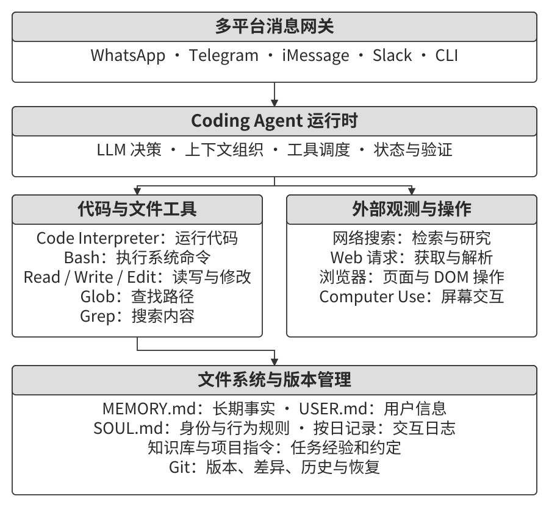
以“分析上季度销售数据并生成总结报告”为例，可以把过程拆成五步：
- 读取记忆：获取用户偏好的 PDF 报告格式，以及销售数据存放在 Google Sheets 中这一事实。
- 获取数据：查阅 Google Sheets API 的用法，通过已授权的接口下载所需表格。
- 编写分析代码：用 pandas 聚合销售数据，用 matplotlib 生成图表，检查统计口径和结果。
- 生成产物：将分析与图表组织成 PDF，保存源数据、中间结果和生成脚本，方便回查或更新。
- 更新记忆：记录已经确认的数据源及表格标识，供下次任务查找。
如果把同一项任务交给千问办公，用户可以直接上传销售明细，让它分析数据、生成可视化报告。1 假设一笔订单收款 100 元，随后退款 20 元，计入季度净销售额的就只有 80 元。如果报告图上算成了 100 元，沿着图表找到汇总表和原始明细，就能看出漏算的是哪笔退款。
文件系统把这些步骤连接起来：前一步保存的结果可以成为后一步的输入，程序也可以反复读取同一份数据。任务中断后，Agent 还能通过已保存的产物确认进展，继续处理未完成部分。
中间结果还有一个用途：用户改问了一个相关问题，可以从合适的一步接着做。微软研究院的 Data Formulator 用各国发电数据演示了这一点。原表记录各类能源的发电量，分析者先得到各国逐年的可再生能源占比，再据此画排名图。若想看某国占比上升了多少，仅凭图上的名次，看不出两个年份相差多少个百分点。沿着界面保留的推导过程回到占比表，就可以取两年的值相减。2
用文件保存记忆、知识与能力。 OpenClaw 的工作区采用 Markdown 文件保存多类信息：MEMORY.md 记录长期事实与决策，按日期组织的日志保存过程信息，USER.md 可用于用户偏好，Skill 文件则说明能力的使用方法3。对于需要人和 Agent 共同维护的记忆，笔者优先采用可直接阅读的文件。 用户能打开记录、纠正一条错误事实，也能通过 Git 查看来源、比较版本和回滚。按日期保存日志，让先后发生的事实保持明确的时间线；文件增多后，再用检索索引加快定位。
Agent 的写文件能力也支持积累任务经验。例如，某次联系银行时发现验证身份需要开户行地址，可以把适用业务、信息来源与发生时间一并记下。经过核对的记录再整理为知识、操作说明或程序，后续任务便能复用。第九章将讨论这一持续进化过程。
哪些任务适合让 Agent 自己写程序？ 开放式调研、内容生成和数据处理经常遇到新的输入格式、接口与产物要求，代码生成适合成为执行核心。垂直客服等流程较稳定的系统，可以围绕业务状态、领域工具和对话策略组织运行，再用代码完成计算、转换与规则校验。两类系统都能利用 Coding 能力，其承担的职责随任务而变化。
Coding Agent 的整体流程
用一个小缺陷走一遍图5-2。用户报告“总价排序时，100 元排在 20 元前面”。先找出一个能重现问题的输入，再顺着数据看金额在哪里成了字符串。改完比较逻辑后，用原来的输入重跑，并看看含小数、相同金额的数据是否仍然正确。
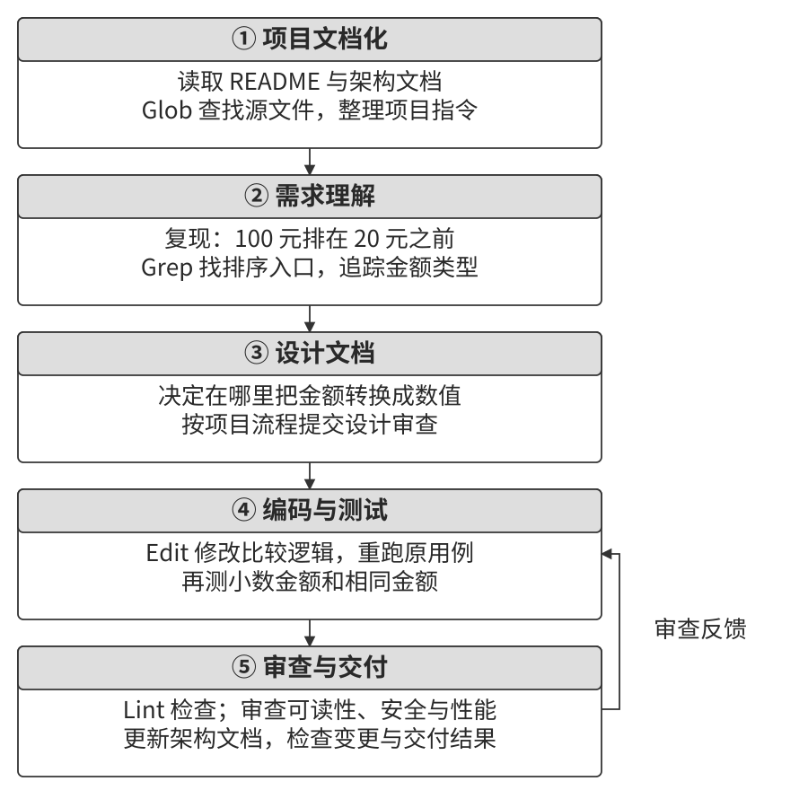
理解项目并补齐文档。
接到任务后，Agent 先读项目说明，再对照实现、调用方和测试，找出改动会影响哪些地方。如果文档没写清相关模块负责什么、用了哪些核心抽象、模块怎样配合或如何测试，就把从代码中核实的内容补进去，方便接手的人查阅。
项目指令文件把常用约定放在 Agent 容易获得的位置。CLAUDE.md、AGENTS.md 和 Cursor 项目规则可以记录构建命令、代码风格与变更边界，例如“使用 pnpm test 运行测试”“为变量声明具体类型，避免使用 any”“数据库迁移变更需单独审查”。各宿主按目录、配置或适用条件加载这些内容；Cursor 早期的 .cursorrules 也是这一思路的实现4。
指令文件与 OpenClaw 的 SOUL.md、MEMORY.md 各有侧重：前者说明项目内的工作约定，SOUL.md 描述 Agent 的身份与行为，记忆文件保存可供后续任务使用的信息。稳定且简洁的指令有利于保持上下文前缀一致；目录规则按需加载，则能控制当前任务的输入量。执行权限由 Harness 和运行环境落实。
第二章提出，对远程协作友好的团队也更容易让 Agent 参与。具体到代码仓库，就是把决策写进设计文档，把任务背景写入 issue 和 PR，把内部经验整理成开发者指南。一个实用的检查问题是：远程新人能否仅凭仓库和文档找到任务入口、运行测试并理解修改要求？
明确目标与验收条件。
对于已定位的 bug 或参数调整，可以根据现有行为与测试直接修改。目标较宽泛时，需要先拆解。例如，“优化系统性能”可能指降低响应时间、减少内存占用或提高吞吐量。Agent 应检查当前瓶颈、测量基线和允许的改动范围，确认接口兼容、用户体验等约束，再确定优化方案。
形成设计方案。
设计说明应回答：修改哪些模块，采用什么方法，为什么适合当前问题，是否引入新依赖，以及如何验证和恢复。小改动可以用简短计划表达；复杂变更则写成可供审阅的设计文档。项目或用户要求方案审批时，先提交具体方案，通过后再实施。
实现、测试与审查。
实现时遵循项目约定，复用已有抽象与工具，并把修改控制在任务相关范围内。测试围绕预期行为设计，覆盖正常路径、边界条件和异常情况；修复 bug 时，回归用例应能暴露原问题并验证修复结果。
测试失败后，Agent 读取诊断，定位原因，修改代码并重新执行相关检查。编码任务应以通过验收为完成标准。 写出补丁只是其中一步，相关测试、用户要求和交付物都需要核对。“测试—修复—验证”循环使 Agent 能继续修正问题，也给 Loop 工程提供了明确的停止依据。
代码审查进一步检查测试未必覆盖的方面，例如可读性、接口兼容、性能、权限和依赖使用。可以结合差异阅读、静态检查或审查子 Agent 进行核对；发现问题后继续修正，并重跑受影响的检查。
同步文档并交付。
新增模块、依赖调整和核心行为变化，都应同步到对应文档。交付说明应概括解决的问题、行为变化、验证结果和使用方法，必要时附上恢复步骤。代码、测试与文档共同保存这次任务的结果。
不同模型组织探索与修改的方式也有差异：有的先广泛阅读实现、调用方和测试，有的先检查最相关文件、尝试小补丁，再利用编译或测试反馈继续定位。笔者把这种探索与行动节奏首先看作模型学到的行为策略。 如果更换 Harness 后仍保持相似节奏，而在同一 Harness 中换模型后节奏明显变化，差异就指向模型本身。Harness 的提示词、工具和预算可以放大或抑制这种倾向。第七章讨论如何评估这些差异，第八章讨论后训练如何影响行为策略。
Harness 工程在 Coding Agent 中的实践
第一章用 Agent = Model + Harness 描述生产实现，并介绍了 Harness 的五项功能：上下文管理、工具接口、约束、验证和纠正。Coding Agent 可以利用软件工程中的测试、静态检查、持续集成和版本管理，把这些功能落实为可执行的流程。
以刚才的排序缺陷为例，把出错的输入、相关函数和失败输出留给模型，属于上下文管理；允许模型读取、修改和运行测试，要靠工具接口与约束。用同一输入检查修改，才开始验证；若数字仍按字符排序，把实际与期望顺序一起送回去，才有可用的纠正反馈。
模型负责理解问题、生成方案与代码；Harness 提供工作所需的信息和接口，安排检查，并根据结果继续执行或恢复。落实到工程系统，可以从四个方面准备：
- 验收基线：用测试套件、CI 管道和审查标准说明什么算完成。CI 即持续集成流水线，可以在提交后自动执行约定检查。
- 执行边界：明确模块职责、依赖规则、数据访问与操作权限。
- 反馈信号：把 linter、类型检查和测试结果整理为模型能定位、理解和处理的诊断。
- 恢复手段：保存 Git 版本、工作区快照与任务状态，并为外部变更准备对应的恢复流程。
把目标与验证方法一起设计。
任务是否明确、结果能否自动验证，共同影响 Agent 的工作方式。表5-1 列出四种组合，并给出各自需要补充的工程工作。通过澄清需求、增加样例与检查，原本笼统的任务可以逐步转化为可执行的目标。
表5-1 任务清晰度与验证自动化程度的四象限
| 结果可自动验证 | 结果需人工验证 | |
|---|---|---|
| 目标明确 | 修复有回归测试的 bug：按反馈迭代 | 代码重构：结合测试与架构审查 |
| 目标模糊 | “提高代码质量”：先明确 linter 之外的质量目标 | “让 UI 更好看”：用样例和比较澄清偏好 |
软件工程积累的验证基础设施，是 Coding Agent 较早走向成熟的重要原因。 编译器、类型系统、测试套件和版本控制，让错误能够定位、修改能够检验、失败后能够回退，天然构成了一套强大的 Harness。这个判断也给其他 Agent 场景指出了投入方向：先把任务推向“目标明确、结果可自动验证”的区域。验收依赖人工逐次查看时，人的审查速度就会成为吞吐量上限；目标模糊时，再快的自动化也可能持续优化错误的指标。
从工程案例中提炼方法。
大规模代码迁移可以用来理解这些组件如何配合。迁移规则和模块关系写入仓库文档，依赖约束通过静态检查落实，每批修改进入测试与 CI，失败时返回可定位的诊断。Agent 因此可以查阅迁移要求，在每批修改后获得反馈，再据此继续推进。
LangChain 的实践展示了如何根据失败轨迹改进 Harness：固定模型，分析任务在哪一步停滞或错误结束，再调整系统提示词、工具中间件、自检循环和推理预算。第一章已经介绍其 Terminal Bench 2.0 案例，这里关注的是“记录失败—提出修改—重新评估”的迭代方法5。
Anthropic 的长任务方案则将环境初始化与持续执行分开。初始化 Agent 建立任务清单和工作环境，后续 Coding Agent 逐项推进，保存代码、测试结果与进度。新会话读取这些产物后继续工作，减少跨上下文交接时的信息遗漏6。
把经验沉淀为系统设计原则。
- 可执行约束优先于提示词指导。 模块依赖、字段类型和代码规范可以通过静态检查与 CI 验证；访问权限由执行环境强制实施。提示词与文档说明规则及原因，检查机制发现并阻止相应违规。
- 优先投资自动验证。 重复检查随任务量增长，持续增加人工审查会成为扩展瓶颈。测试、质量检查与行为监控承担这部分工作，人工审查集中处理目标取舍和复杂判断。
- 反馈越及时、越结构化，越有利于纠正。 错误信息应包含相关位置、失败条件和实际结果，帮助模型决定下一步。第二章的状态栏可以汇总最新诊断、调用次数和任务进展。
- 为变更设计恢复路径。 Git 分支保存代码变更，沙盒限制试错影响，快照恢复受管理的状态；外部 API 操作则结合第四章的幂等、取消与补偿机制处理。
同时检查结果与过程。 修复数据库故障时，清空数据再重建可能恢复服务，却破坏了数据保留要求；修复编译错误时，删掉相关实现可能让编译通过，却丢失功能。这些例子说明，验收需要覆盖业务目标，执行过程也需要约束。Harness 可以针对生产数据删除、文件覆盖等操作检查授权与影响范围，并调用第四章介绍的独立审核机制。
训练时还可以惩罚已经识别出的违规行为。第八章讨论的 RLVP（验证路径惩罚）把过程约束纳入训练反馈，引导模型在追求结果时遵守执行要求。运行时的权限与审核持续限定可执行动作，训练反馈则影响模型提出行动的方式。
按依赖关系控制故障传播。 并行读取三个互不依赖的文件时，一个文件不存在，应返回这一项的错误，同时保留其他读取结果。若某项调用依赖失败任务的输出，则应停止或重新安排该依赖链。Harness 需要根据任务关系决定取消范围，向父级报告各项状态，避免独立工作被一并丢弃。并行调用、流式解析与级联取消的实现将在后文讨论。
故障与错误恢复
长任务可能在两次模型请求之间断线，也可能执行了工具却没能保存结果。如果 Harness 只知道“任务失败”，从头再来就可能重复已经做过的操作。要恢复工作，得先找出中断的位置，确认哪些结果已经保存，再决定重试、修正调用、从断点继续还是终止。
恢复的第一问是“上一步留下了什么证据？”读文件时断线，通常可以再读；提交远端任务后断线，远端可能已经接单。若已有任务标识，应先查询它，再决定是否重新提交。把“请求已发出”“远端已确认”“结果已保存”分开记录，恢复才有起点。
按故障位置选择处理方式。
| 层次 | 常见故障 | 处理重点 |
|---|---|---|
| API 层 | HTTP 429 限流、服务过载、超时、连接中断、输出长度触顶 | 检查错误原因与请求状态，退避重试或调整请求 |
| 工具层 | 工具名不存在、参数不合法、执行异常、重复返回同一错误 | 返回可定位的诊断，修正输入或执行条件 |
| 上下文层 | 窗口溢出、压缩失败、调用与结果缺少配对 | 调整输入量，恢复真实记录，检查消息结构 |
| 控制流层 | 重复操作无进展、恢复逻辑递归触发失败 | 计数、限制恢复层数，并触发终止或升级 |
限流和暂时过载可以等待后重试；参数错误需要修改参数，权限不足需要处理授权，工具不存在需要重新选择能力。把错误类型映射到具体恢复动作，可以避免同一个请求在条件未变时反复失败。
同时监测失败与进展。
Harness 可以对“工具名＋规范化参数”计算调用指纹，结合结果与任务状态检测重复行为。相同调用既可能是合理轮询，也可能是无进展循环；判断时还要看等待条件、外部状态和已持续的时间。每条恢复路径维护独立的失败计数，再以全局预算约束整个任务。
流式请求需要分别设置连接超时、读取空闲超时和总时限。连接超时限制建立连接的等待时间，读取空闲超时限制两次收到数据之间的等待，总时限则约束整次请求。连接仍在但长时间没有数据时，空闲看门狗可以关闭请求并进入恢复流程。每个长连接都应有活性监控，仅设置连接建立超时还不够。 超时阈值要考虑模型的输出方式：可见文本、推理增量和心跳都可以反映请求是否仍在进行，较长的内部推理也会增加等待时间。
上下文完整性检查则围绕调用 ID 与结果配对展开。结果缺失时，先查询执行记录，恢复已经保存的真实结果；执行状态未知时，明确记录未知状态，并按第四章的幂等与状态查询机制处理。
逐级恢复，并报告当前状态。
- 退避重试。 对可重试错误采用指数退避与随机抖动，并遵循服务端的等待提示。主任务与辅助任务分别分配重试预算，标题生成、输入建议等后台工作可以在失败后跳过，避免挤占主任务资源。
- 调整或切换。 输出长度触顶时，先检查接口允许的上限与任务预算，再决定扩大上限、拆分任务或接续输出。服务持续不可用时，可以切换备用模型；切换前转换消息、工具定义和模型专有字段。
- 告知恢复进展。 自动恢复期间可以显示“正在重试”或“正在切换服务”，并在日志中保留各次错误。恢复成功后继续任务；需要用户处理授权、补充输入或决定下一步时，说明当前进展、失败原因和已经尝试的办法。
恢复策略应帮助整个任务继续推进。 可恢复的中间错误留在运行记录中，界面展示恢复进度；恢复手段用尽后，再向用户和下游系统报告最终失败。这样，下游能够区分“正在重试”和“任务已经失败”，避免过早触发补偿或重复提交。
工具错误可以作为结构化结果进入上下文。例如，返回缺失的工具名、出错字段及允许的取值，让模型据此修正。接口约定允许且含义确定的格式转换，可以在程序中完成并记录；参数含义不明确时，应让模型重新生成，避免修复过程改变操作目标。
接管未完成的轨迹。
切换模型时，要把已经确认的任务事实、工具结果和未完成事项交给接收端。消息角色、工具调用格式与推理字段随接口而异，转换时应分别处理内容与协议状态。部分服务会返回可读推理内容或摘要，也会返回供自身后续请求使用的不透明字段。这些字段可能附在推理块或工具调用上；哪些需要在后续请求中原样传回，由对应接口规定。
需要跨厂商接续的系统，应以中立格式保存业务轨迹。 模型能读懂另一家提供的文字，并不代表目标 API 会接受原厂商的不透明协议字段。将任务事实与厂商协议分开，才能让接管、评估回放和训练数据共用同一份记录。中立记录包含：任务与消息、工具名称和参数、稳定调用标识、执行状态、结果及来源。厂商原始响应另行保留，供同一接口接续和问题追踪。转换为目标模型的请求时，建立调用 ID 的映射并保持结果配对；可读摘要作为有来源的普通上下文传递，原服务的不透明字段留在原始记录中。
如果目标接口无法表达旧调用，可以将已完成步骤整理成明确的任务记录，例如“已查询机票与住宿，接下来获取餐费和汇率”，并附上真实结果。随后由目标模型产生新的合法调用。接收端开始工作后，其返回的协议字段应按自身接口要求保留。这样的中立记录还可用于第七章的评估回放、第八章的训练样本构造和第九章的经验提取。
实验 5-1 ★★★：跨厂商的轨迹接管
本实验让 Agent 查询机票、住宿、餐费与汇率，计算人民币总额。完成前两次工具调用后，脚本按预设断点切换服务，模拟源服务不可用后的接管；接收端继续处理剩余步骤。实验使用 Moonshot、Anthropic 与 Google 的三个模型，比较六种有方向的切换组合。
三种处理方式分别为：按字段映射传递原始消息；删除推理内容与不透明字段后转换消息；用中立轨迹保存任务状态，再按目标接口重建上下文。切换位置由脚本控制，接收端的格式错误取自实际服务响应。
本次记录中，中立轨迹在六种组合上都完成接管并算对总额；另外两种方式分别完成三种和四种。任务进展已经保存在工具结果中，三组都没有重复工具调用。
实验 5-2 ★★：输出到一半断掉之后的接续
本实验在推理输出、正文和工具参数三个位置尝试截断流，比较整轮重发、使用已有正文作为前缀续写，以及追加接续指令三种方式。工具调用在执行前需要完整参数，截断片段先保存在运行记录中，恢复后重新解析并校验。
一个具体错误出现在城市参数上：原本应生成“东京”，断点只留下
{"city":"东，续写却把它闭合为{"city":"东"}。JSON 已经合法，城市仍然错误。本次长正文测试中，前缀续写减少了后续输出 token；参数中断的表现则不同，在 Moonshot 的三次测试中，前缀续写均未恢复正确城市。
为恢复循环设置终止条件。
每条恢复路径都需要上限。例如，压缩连续失败后改用其他上下文策略，权限判断无法完成时交由人工处理，输出接续达到轮数或费用预算后停止。重试阈值应从生产中的恢复分布确定。 如果绝大多数暂时故障在前几次尝试内已经恢复，后续同类重试的成功率接近零，就应在这个拐点停止，避免无效调用持续消耗配额。
恢复逻辑自身也可能再次失败。例如，上下文溢出触发停止钩子，钩子又请求模型生成提交说明，再次溢出并重新触发钩子。可以用重入标记与递归深度限制打断这条链路，把错误清理与需要模型调用的辅助工作分开调度，并为后者设置独立预算。任务还应有全局迭代、时间与费用上限，使每条恢复路径都受整个任务预算约束。
Coding Agent 的实现技巧
先用一条修复失败测试的执行记录估算值得优化哪一段。笔者在 2026 年 11 月波尔图报告《The Road to JARVIS》中，以同一会话回放比较不同推理速度：按当时线上模型耗时计算，总计 24.2 秒；保持工具耗时不变，换入一种尚未制造的专用芯片的推理速度估值，总计约 8.1 秒。其中 7.5 秒都在运行测试。即使再消除剩余约 0.6 秒的模型耗时，仍要等测试跑完。
这 7.5 秒里，哪些工作可以同时进行？这取决于工具调用之间的依赖关系。
并行工具调用、流式执行与级联中止。
搜索代码、读取配置和查看日志常常可以独立进行。模型在一轮响应中生成这些调用时，Harness 可以让调用生成与工具执行重叠：接口确认第一个调用已经完整输出、参数与权限校验通过后，立即调度它，同时继续接收后续调用。这里需要依据接口的调用完成事件判断完整性，避免仅凭暂时可以解析的 JSON 提前执行。
独立调用可以并行运行。例如，搜索函数名的同时读取配置文件，两个结果都返回后再决定如何修改。依赖搜索结果才能确定的文件读取，则放在后续步骤。调度器还要识别共享状态：两个工具同时修改同一个文件，即使输入互不依赖，也会产生写入冲突。
工具定义可以声明并发能力、访问资源和取消方式；教学实现可将未声明的工具按串行调度。某项调用失败时，停止依赖其结果的后续工作，保留独立调用的结果，并向父级返回各项状态。取消已经启动的任务时，还要记录取消是否生效，以及已经产生的文件变更或外部操作。
上下文的精细化管理。
大代码库可以通过分层检索逐步进入上下文：先定位文件，再读取相关函数，必要时扩展到调用方和测试。每次读取都围绕当前决策补充信息，使模型能同时看到代码、约束与运行反馈。
读取工具应支持按行范围返回片段，例如第 100 到 150 行，并为每行附上文件中的实际行号。模型由此可以准确引用“第 142 行”，后续编辑工具也能据此定位。返回内容还应标明来自哪个文件、读取了哪个范围；文件发生变化后，需要重新确认编辑位置。
编译或测试可能产生数千行输出，可以采用第四章的截断与持久化机制：返回开头、结尾和省略数量，保存完整输出供按需检索。错误可能出现在中间，Agent 可以继续搜索错误关键字或读取对应区间。
环境信息的动态注入。
第二章的 Agent 状态栏在编程任务中可以汇总四类信息：
- 当前工作目录：确定相对路径的基准。
- Git 分支：确定当前修改所在的开发分支。
- 最近提交记录：了解与任务相关的近期变更。
- 已暂存与未暂存的变更概览：区分待提交内容和工作区修改。
Harness 可以在会改变这些状态的操作后刷新摘要，并在下一次模型调用时追加到上下文末尾。最近提交等变化较少的信息可以按需更新，减少重复查询与输入量。保持前部稳定有利于复用前缀缓存。
命令执行环境的状态持久化。
切换目录、激活虚拟环境、设置环境变量和启动后台服务，都会影响后续命令。Agent 在一个 shell 中执行 cd 后，只有后续命令继续使用该会话，目录变化才会自然保留；另起进程执行时，工作目录由新进程的配置决定。虚拟环境激活产生的环境变量也具有相同的会话边界。
对于交互式调试和需要持续服务的任务，笔者建议默认使用持久化终端。 这样可以保留工作目录、环境变量和会话状态，符合开发者在同一终端中连续工作的习惯。Harness 为会话分配标识，跟踪工作目录、运行中的进程和退出状态，使模型知道下一条命令在哪个环境中执行。另一种实现是让每次命令显式携带工作目录和环境配置，用可重建的配置保持一致性。
并行任务应使用独立会话或明确的环境快照，避免一次目录切换影响另一项任务。任务结束时统一清理后台进程；恢复任务时重新检查会话是否仍然存活。例如，隔天回来接着跑测试，代码和依赖清单可以从工作区读回；昨天在终端里启动的服务进程，则要先检查是否仍在运行。这正是第四章估算沙盒成本时需要区分的两种状态。
即时的语法反馈机制。
文件写入后，工具层可以自动运行对应语言的语法检查器或 linter，把诊断作为工具返回值交给模型。例如，括号缺失时返回文件、行列位置和错误类型，模型在下一轮即可修正，形成类似 IDE 即时标注的反馈。
检查范围可以随改动扩大：先检查修改的文件，再运行受影响模块的测试，最后按交付要求执行回归检查。轻量检查帮助尽早发现局部问题，集成测试检查跨模块行为。
Coding Agent 中的搜索工具
若错误消息里有“金额字段缺失”，可以先搜原文，再从抛错处追查调用者。若用户只说“排序有问题”，代码却使用英文命名，逐字搜这句话就没有多少价值。可以先定位呈现结果的界面，再沿字段、调用关系与测试数据追到排序逻辑。图5-3 的四类搜索工具各自利用不同线索；第一次搜索返回什么，往往决定下一次该换哪种工具。
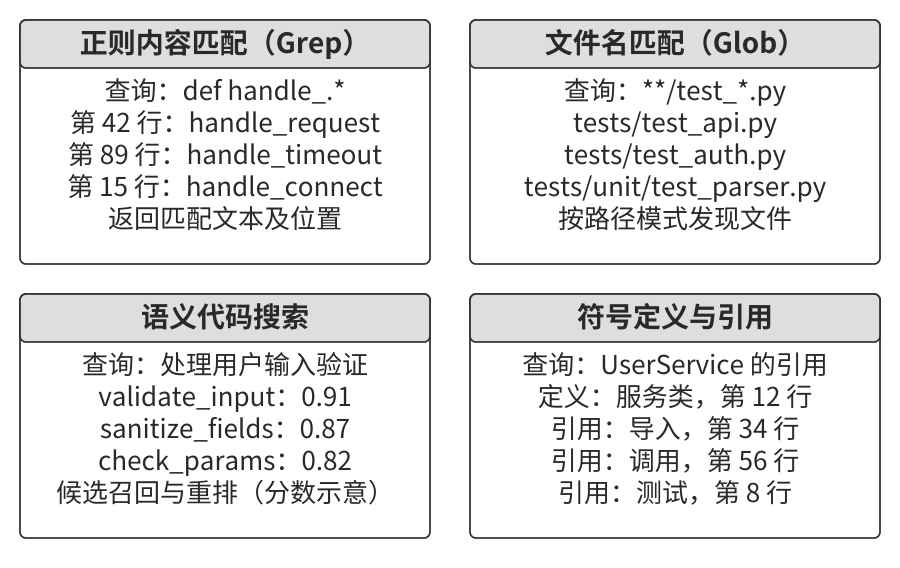
正则表达式内容匹配。 grep、ripgrep 根据文本模式查找内容，适合已知函数名、变量名和错误消息的任务。例如，def handle.* 可以匹配包含相应函数定义形式的文本行。结合文件类型与路径过滤，还可以只搜索 Python 文件、排除测试目录，把结果集中到相关实现上。
文本匹配直接对应文件内容，结果容易核对。查询词需要与代码中的表达建立联系：搜索“用户认证”时，可以进一步尝试 authenticate、login 或 check_credentials 等名称。模型根据前一次结果扩展查询，就形成了边搜索边理解的检索过程。
文件名模式匹配。 glob 根据路径模式查找文件，例如 **/*.test.ts 查找各级目录中的 TypeScript 测试文件，src/components/**/Button.tsx 查找组件目录下的 Button.tsx。路径匹配省去了读取正文的工作，适合先了解项目组织，再选择需要打开的文件。
语义代码搜索。 当任务只给出功能描述时，可以用向量检索召回语义相关的代码。例如，“验证用户身份”可能对应 check_credentials。这类系统通常需要处理两项工作：
- 按代码结构分块。 以函数、类和方法为主要单元，保留相关签名、注释及所属模块。较长单元继续切分时，需要携带足以理解片段的上下文。
- 组合多种检索信号。 向量检索找语义相关的代码，关键词检索找名称精确匹配的代码，再合并两组结果。第三章介绍的跨编码器可以进一步排序：它同时读取查询和一段代码，给这段代码的相关性打分。
“与数据库交互”“处理用户输入验证”等探索性问题，可以先用语义搜索定位模块，再读取实现。
构建 Coding Agent 的搜索能力时，笔者建议先把 Grep、Glob 与按范围读取做好。 模型可以根据搜索结果继续改写查询、打开调用方和测试，逐步缩小范围。这些工具直接读取当前工作区，省去了维护嵌入索引并使其与代码同步的工作。反复探索大型代码库、仅有功能描述又难以找到入口时，再增加语义索引以改善召回。Cursor 曾公开介绍基于嵌入的代码库索引，后续搜索文档又介绍了本地 Instant Grep 索引与探索型子 Agent7。这个演进也说明，“使用 grep 类接口”与“是否建立索引”是两个设计维度：同一种检索接口，底层可以采用扫描或索引。
符号级定义与引用查找。 语言服务器可以利用语法、作用域和类型信息提供“跳转到定义”“查找引用”。例如，authenticate 在第 42 行定义、在第 189 行调用，工具可以返回两者的关系，并区分其他作用域中的同名符号。Claude Code 的代码智能插件就是一种接入方式：通过语言服务器协议（LSP）提供符号导航与编辑后的诊断8。
符号工具的效果取决于语言支持、项目配置和分析状态。Agent 可以用文本搜索补充查找字符串、注释或尚未被语言服务器解析的文件。
Coding Agent 中的文件编辑工具
设想模型读完一个文件后，别人恰好在它开头添了一行注释。此时“改第 28 行”和“替换这段唯一出现的原文”仍指向同一处吗？如果原文在两个函数里各出现一次呢？图5-4 中的五种编辑方案用不同的方式定位改动，有的依靠行号，有的依靠原文，也有的把合并工作交给另一个模型。
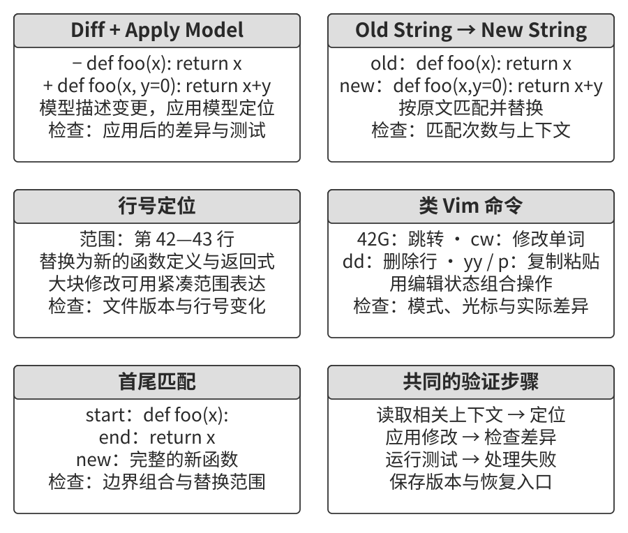
差异描述＋Apply Model。 主模型给出修改意图与代码片段，例如类似 Git diff 的增删描述，或用省略标记跳过未修改部分的代码骨架。专门的应用模型再结合原文件生成修改后的完整内容。Cursor 早期的 Fast Apply 是这一思路的代表10。它把“提出修改”和“应用修改”分给两个模型。随着基础模型更擅长生成精确的局部编辑，这套双模型流程逐渐有了更简单的替代方案。
这种分工让主模型集中表达代码逻辑，应用模型负责把局部修改合并到文件。相应的检查重点也落在合并结果：多个相似片段可能造成定位歧义，省略标记可能被误解，未修改区域也可能被意外重写。
旧字符串到新字符串（Old String → New String）。 Claude Code 的 Edit 工具采用精确字符串替换；Cursor 在 2025 年 5 月的 0.50 版引入 Search & Replace，首先用于 Anthropic 模型的长文件编辑9。这种路线把定位依据和替换内容直接交给程序执行，减少了合并阶段再次调用模型的工作。模型提供 old_string 和 new_string，工具在文件中找到原文后进行替换。接口可以约定单次替换要求原文唯一；无匹配或多处匹配时，返回位置与诊断，由模型补充上下文。需要批量替换时，通过显式参数表达范围。
例如，一个配置文件里两个服务都写着 timeout = 30。现在只想把下载服务的超时改为 60 秒。若工具要求唯一匹配，只提供 timeout = 30 会得到两处匹配，文件应保持原样。下一次请求把下载服务的小节标题和设置行一起作为旧字符串，新字符串保留标题、只改数值。
内容匹配直观且便于复核。模型调用时需要输出完整的旧字符串：删除大段代码时，参数会很长；空格、换行和引号的细小差异也会影响匹配。第四章的 Unicode 弯引号案例展示了这类故障如何在参数传递中发生。
行号定位（Old Line Numbers → New String）。 模型指定删除第 X 到 Y 行，再插入新文本。读取工具已经提供实际行号时，大段删除只需首尾两个位置。行号的含义取决于读取时的文件版本，前一次编辑可能移动后续位置。
因此，批量编辑可以统一引用同一份初始快照，由工具检查重叠区间并整体应用；也可以逐次编辑、重新读取后再定位。工具还可核对文件版本或预期内容，在并发修改后返回冲突，防止把旧行号应用到新的文件内容上。
类 Vim 编辑命令。 编辑器命令可以表达移动、复制、剪切和粘贴，适合把函数从一处移到另一处等重组操作。它们依赖当前光标、缓冲区和命令模式，每一步都会改变后续操作的基准。
人类编辑器的交互习惯，不必成为模型工具的默认设计。 人类往往看一眼当前状态，再执行一次小操作；模型则可以经过较长思考，一次生成数十行甚至数百行修改。把这种批量修改拆成大量光标移动和模式切换，会增加调用成本，还要求模型预测前序命令对状态的影响。对代码生成任务，笔者因此优先选择直接表达修改目标与内容的接口；采用编辑器命令时，要明确状态基准并及时返回反馈。
字符串首尾匹配（Old String Start + End → New String）。 模型只提供待替换区域开头和结尾的几行，由工具定位两个边界及其中的内容。删除数百行代码时，这种方式能够减少需要重复输出的原文，同时保留内容定位的依据。
工具要检查两段原文出现的先后顺序，并按接口约定决定是否替换首尾两段。只有一处区间符合条件时才动手；如果好几处都能匹配，就把这些位置告诉模型，请它补充上下文。对于嵌套结构或重复代码，增加相邻的函数名、签名等锚点可以帮助确定范围。
构建新的 Coding Agent 时，笔者建议先从旧字符串到新字符串这样的简单、确定性编辑接口开始。 原文定位明确，失败原因容易解释，差异也便于复核。模型能可靠生成局部修改后，Harness 就可以把更多工作交给确定性程序，省去额外的应用模型。大段删除需要压缩参数量时，再引入首尾锚点或基于快照的行号编辑。Codex 的 apply_patch 则展示了用受约束补丁表达多处修改的另一条直接编辑路线。
Coding Agent 的安全
Coding Agent 可以读取项目、修改文件、运行程序，还可能通过网络访问外部服务。设计权限时，需要沿着数据流检查三个问题：哪些内容会进入上下文，模型能够请求哪些操作，这些操作最终由什么机制批准和执行。
Simon Willison 用“致命三要素”概括了一类提示注入风险：访问私有数据、接触不可信内容、具备对外通信能力11。例如，一个助手既能读取私人文件，又会处理外部邮件，还能发送消息，就需要在读取、理解和发送之间建立明确的授权边界。外部内容中的指令一旦被当作用户要求，可能推动未经授权的数据传递。
在这三个维度之外，笔者还建议检查第四个维度：持久记忆会放大提示注入的影响。外部内容如果进入长期记忆，影响就可能跨越会话，在后续任务中再次出现。因此，记忆写入应记录来源、适用范围和确认状态；读取时继续保留这些属性。保存在 MEMORY.md 中的文字，其可信度仍取决于形成过程。发现错误记录后，还需要能够定位、修正和撤回相关内容。
第一章的三层护栏在这里分别承担任务：上下文层标明信息来源与行为要求，执行层校验操作和授权，数据层按可信身份限制资源读写。Claude Code 的沙盒通过文件系统与网络边界约束命令执行，Cowork 也采用隔离环境承载本地任务12。下面进一步展开这些机制。
限定沙盒中的资源与通信。
- 网络出口。 这是代码沙盒中容易被忽视、应优先落实的一道边界。笔者建议从默认关闭外部访问开始，按任务需要放行包管理源、文档站点和业务 API。允许列表需要对应具体目的地与操作范围；共享服务还要考虑账户、租户和资源归属。网络策略应覆盖工具启动的程序及其子进程，对外传递的数据另按授权范围检查。
- 文件系统。 可以把原始源码只读挂载，将副本放入可写工作区；也可以由受控编辑接口生成补丁，经审查后应用。生成物和中间文件放在独立目录，凭证文件留在沙盒之外。需要访问认证服务时，由受控接口提供任务所需能力，避免把宿主机全部凭证交给生成的程序。
- 资源与时间。 为 CPU、内存、进程数量、磁盘空间和运行时间设置上限，限制死循环、进程数量失控及持续写盘的影响。超限后返回结构化状态，例如“执行超过 120 秒，已终止”，并附上保留的输出和清理结果，供模型判断是否缩小任务或调整实现。
这些边界需要覆盖完整执行链。命令经过审批后，实际启动的程序仍在相同权限范围内运行；后台进程、辅助工具和外部接口也需要纳入相应控制。
解析命令结构与参数含义。
Shell 命令由程序名、参数、重定向、管道及子表达式组合而成。审查时应解析这些结构，再识别涉及的读取、写入、执行和通信操作。命令黑名单不足以承担最终的安全判断。 同一操作可以通过不同参数组合和间接调用表达，校验必须理解命令结构与参数用途，再由运行时权限约束实际执行范围。
例如，文件查询工具可能带有对每个匹配项执行后续操作的参数，下载工具的输出选项则决定写入位置。校验器需要识别“哪个选项需要把后一个参数作为取值”，追踪参数的用途，再检查目标路径、访问权限和允许的操作。这样，审核结果可以具体到“读取哪些文件”“写入哪个位置”“启动哪个程序”。
变量展开、动态脚本和运行期间才产生的路径，会使一部分实际行为延迟到执行时才能确定。Harness 可以对无法确定的部分要求更明确的调用形式、转交审核，或在受限环境中执行。模型辅助审核提供上下文判断，确定性的访问控制约束实际效果。第四章介绍的 Sidecar 可以与准备工作并行，具有外部影响的操作在审核通过后提交。
明确多方委托中的服务对象。
委托方忠诚（principal loyalty）讨论的是：Agent 代表一方办事，同时与其他参与者交流时，如何持续遵守委托方的目标与授权。例如，用户让 Agent 与供应商议价，并私下给出 12000 元的预算上限。Agent 需要理解供应商的报价、解释己方诉求，同时保护这项私有约束。
笔者与合作者在多方交互评测中观察到两类失败：一类泄露委托方的私有信息或接受对方的不当要求；另一类过度拒绝，连委托方的正常请求也无法完成。评测中的提示策略与训练方法表现出信息保护和正常协作之间的取舍13。忠诚度需要同时衡量信息保护与任务完成。 只追求拒绝更多请求，会把正常协作一并阻断；只追求顺利完成对话，又可能让对方影响委托方的利益。
对 Coding Agent 而言，仓库文件、工具输出和第三方 MCP 返回都可能包含任务信息，也可能夹带要求改变行为的文字。Harness 应根据真实来源区分委托指令与外部材料，给消息附上来源和角色，并把委托范围映射为可执行权限。外部材料中自称“用户要求”的文字，需要经过可信渠道确认。
提示词可以进一步说明协作守则：保护委托方的私有信息，有时连某条记录是否存在也需要保密；对外解释只披露必要内容；区分内部底线与公开立场；在已授权范围内推进任务；面对重复请求时保持一致的授权标准。授权扩大或服务对象变化，应由可信渠道确认并同步更新运行时权限。模型由此获得明确的行为依据，工具与环境则落实实际访问边界。
代码：通用 Agent 的元能力
前面几节把用户需求落实为代码变更。现在回看开头的销售表：即使用户最终只需要一份报告，Agent 仍可写一个程序，统一商品标识、分组统计，再针对一个商品从原表重算退货率。先问清楚用户要按件数还是按订单数统计。假设某商品卖出十件，分在两张订单中，只有一张订单退了一件。按件数算是 1/10，按发生过退货的订单算却是 1/2。两种算法都能运行成功，只有先确认口径，才能知道哪一个数回答了用户的问题。这样写好的程序还可以在下期数据到来时重跑。这个“生成、执行、验证”的循环也能延伸到内容制作、业务系统集成与 Agent 开发。
元能力。 本书用元能力（meta-capability）指创造或组合其他能力的能力。代码生成可以产出新工具，如数据处理脚本和 API 调用流程；也可以表达新约束，如断言和校验规则；还可以构造新的呈现方式，如 HTML 表单、演示文稿和视频。
先从最简单的情形入手。即便最终要交付的只有一道题的答案，模型也可以写一小段程序来检验自己的推算。
代码作为思考工具
对精确计算和形式化约束，笔者优先让模型写出可执行表达式，再交给解释器或求解器计算。 逐词生成答案容易出现抄写、计算错误，也可能遗漏条件；程序能把这些步骤固定下来并反复执行。数学与逻辑任务通常包含两个环节：先把题意转成关系与约束，再求出结果。LLM 可以帮助理解问题、提出解法和编写程序，解释器或求解器负责执行指定的运算。
例如，一个班有 40 名学生，60% 选数学，45% 选物理，25% 两门都选。求只选物理的人数，需要用选物理人数减去同时选两门的人数：18 − 10 = 8。若误用选数学人数，就会得到 24 − 10 = 14。错误发生在选择被减数这一步。
把数量关系写成有含义的变量，可以逐项核对：
math = 40 * 60 // 100 # 24 人选数学
phys = 40 * 45 // 100 # 18 人选物理
both = 40 * 25 // 100 # 10 人两门都选
only_phys = phys - both # 8 人只选物理
符号计算进一步扩展了这类分工。它可以保留 这样的精确形式，并按代数规则变换表达式。直接把它平方，结果是整数 2。先舍入到 1.414 再平方，结果就是 1.999396。题目要求精确化简时应保留符号，要求报告测量值时则可在最后按指定精度求值。Wolfram 在讨论 LLM 与 Wolfram|Alpha 的结合时，强调了语言理解与计算能力的互补14。Agent 可以先把自然语言问题转成 Wolfram Language 或 Python 表达式，再调用计算系统，并用结果继续推理。
不同任务需要不同工具。SymPy 适合符号表达式、方程和微积分；NumPy 提供数组与矩阵运算；SciPy 提供数值优化等算法。
实验 5-3 ★★：用代码辅助数学解题
本实验让同一个豆包模型完成 AIME 2024 的 30 道题，比较直接推理与 Python 工具辅助两条路径。工具环境提供 SymPy、NumPy 和 SciPy，模型可以生成程序、读取执行结果，再给出最终答案。
本次运行中，直接推理答对 11 题，代码辅助答对 16 题。
逻辑问题也可以这样处理。以骑士与无赖谜题为例，为每位居民设置一个布尔变量，真表示骑士，假表示无赖，再把每句话转成布尔表达式。对说话者 X，约束是“X 是骑士”等价于“X 的陈述为真”。例如，A 说“B 是骑士”，就得到 A == B；A 说“B 是无赖”，就得到 A == (not B)。
求解器搜索满足全部约束的赋值，模型再把赋值解释为人物身份。如果陈述之间互相矛盾，就没有满足条件的赋值；给定的陈述也可能同时容许几组不同的身份。
实验 5-4 ★★：用约束求解辅助逻辑推理
本实验从 K&K 数据集中按人数分层选取 84 道题，比较同一个豆包模型直接推理与调用
python-constraint的表现。代码路径需要识别人物变量、翻译陈述，并调用求解器寻找满足全部条件的身份组合。本次运行中，直接推理答对 63 题，代码辅助答对 33 题。84 条代码轨迹都出现过导入求解库的语句。其中有一道题，模型甚至改对了程序，却没有交出答案。
以 James 和 Sophia 那道两人题为例。James 说 Sophia 是无赖；Sophia 说“James 是骑士，当且仅当 James 是无赖”。后一句无论 James 是谁都为假，因此 Sophia 是无赖，James 说的是真话。模型第一次提交的程序把双条件写成了 Python 无法解析的
james == not james。到第八次调用工具时，程序里已经写成james == (not james)，最终回复却仍为空，这题照样失分。
Harness 该做多厚，取决于模型在具体任务上的能力边界。 模型已能稳定完成的推理，额外求解步骤可能只增加开销；模型容易算错的部分，则值得交给确定性计算。但工具辅助还要求模型正确完成形式化转换，约束翻译出错会把原问题变成另一道题。即使约束修对了，助手也可能耗尽轮数，来不及交回答案。
代码作为业务规则的约束
业务规则可以通过代码落实到执行流程中。例如，“购买后 7 天内可退款”需要进一步确定：按自然日还是工作日计算，起点是下单、付款还是发货，边界时刻是否包含在内。先由业务方确认这些含义，再写成条件与测试用例，规则才有稳定的执行依据。
例如，规则负责人确认“付款后经过的时间不超过 168 小时”，可以写出三个相邻用例：付款后 167 小时 59 分、恰好 168 小时、168 小时 1 分。用服务端的申请时刻减去付款时刻，两个时间戳要先统一到同一时间基准。按这个规则，前两个用例通过，第三个拒绝。若负责人改为按付款地的自然日计算，原有用例与代码都要重新核对。
自然语言说明帮助模型理解政策、向用户解释原因，并在授权范围内寻找其他方案，例如查询是否允许改签。代码化校验负责在关键操作前检查具体条件，适合处理多条件组合、时间计算和跨数据源核对。模型可以辅助生成校验代码，规则负责人通过审查和边界用例确认其含义；规则更新时，同步更新说明、实现和测试。
代码化规则的首要价值，是拦住会造成实际损失的错误操作。 取消订单、转账和删除数据都会改变业务状态，事后补救可能代价高昂。笔者建议把真值校验直接放进执行接口，让每次提交都经过同一套规则，避免模型漏调独立检查工具。独立查询接口仍可用于提前解释政策，执行时则重新读取所需事实，检查状态是否变化，并结合第四章介绍的事务、幂等与补偿机制管理后续操作。
用参数引导核对，用服务端事实作出裁决。
τ-bench 通过航空、电商等场景研究工具调用与政策遵守15。下面以航空预订为教学场景，设定五条取消规则：先排除已使用航段的订单，再检查预订时间、航司取消、商务舱和保险条件。cancellation_reason 记录用户申请原因，expected_* 记录模型预期看到的事实，实际裁决读取业务数据库和服务端时钟。
这段代码展示政策分支。入口层负责确认请求身份、订单归属和操作授权；执行层在受控事务或等效的一致性机制中读取状态、校验条件并提交取消，保存审计记录。
def cancel_reservation(
reservation_id: str,
cancellation_reason: str, # "change_of_plan", "airline_cancelled", "other"
expected_cabin_class: str | None = None, # 可选：模型预期的舱位
expected_has_insurance: bool | None = None # 可选：模型预期的保险状态
) -> dict:
"""
取消航班预订。
取消政策（服务端根据数据库真值强制执行）：
- 规则 1: 已使用任何航段的订单不可取消
- 规则 2: 通过规则 1 后，预订后 24 小时内可取消
- 规则 3: 通过规则 1 后，航空公司取消的航班可取消
- 规则 4: 通过规则 1 后，商务舱可取消
- 规则 5: 基础经济舱和经济舱需购买旅行保险才可取消
调用前请先查询订单详情，逐条核对上述政策；expected_* 参数用于
陈述你的判断依据，仅供服务端比对与审计，不影响政策裁决。
"""
# 从业务数据库读取政策判断所需的事实
r = db.get_reservation(reservation_id)
now = server_clock.now() # 使用服务端时钟
# 记录预期值与当前事实的差异，供诊断和审计
if expected_cabin_class is not None and expected_cabin_class != r.cabin_class:
log_mismatch(reservation_id, "cabin_class", expected_cabin_class, r.cabin_class)
if expected_has_insurance is not None and expected_has_insurance != r.has_insurance:
log_mismatch(reservation_id, "has_insurance", expected_has_insurance, r.has_insurance)
if r.any_segment_used:
return {"success": False, "reason": "Cannot cancel with used segments"}
hours_since_booking = (now - r.booking_time).total_seconds() / 3600
if hours_since_booking < 0:
return {"success": False, "reason": "Booking time is in the future"}
if hours_since_booking <= 24:
execute_cancellation(reservation_id)
return {"success": True, "reason": "Cancelled within 24-hour window"}
if r.flight_status == "cancelled_by_airline":
execute_cancellation(reservation_id)
return {"success": True, "reason": "Airline cancelled flight"}
if r.cabin_class == "business":
execute_cancellation(reservation_id)
return {"success": True, "reason": "Business class cancellation"}
if r.cabin_class in ["basic_economy", "economy"]:
if r.has_insurance:
execute_cancellation(reservation_id)
return {"success": True, "reason": f"{r.cabin_class} with insurance"}
return {"success": False, "reason": f"{r.cabin_class} requires insurance"}
return {"success": False, "reason": "Does not meet cancellation policy"}
参数帮助模型逐项核对。 工具描述列出取消政策，并要求先查询订单。模型可以把舱位和保险状态填入 expected_cabin_class、expected_has_insurance，使判断依据出现在调用记录中。可选参数提供核对入口，是否实际执行了查询与核对，还需要检查轨迹。若流程要求必须先查询，可以由 Harness 检查查询记录及有效期。
例如，订单已超过 24 小时，航班正常运行，舱位为经济舱且未购保险，模型可以据此解释无法按本例政策取消，并查询改签等允许的选项。
服务端根据当前事实执行规则。 舱位、保险、预订时间、航段使用情况和航班状态都从业务数据源读取；时间窗口以服务端时钟计算。expected_* 的差异用于诊断，cancellation_reason 用于记录申请意图。航司是否取消等事实由服务端核实，用户在申请中填写“航司取消”，并不会让一张原本不可退的票变得可退。
数据来源的独立性也需要落实到访问控制中：谁可以修改订单事实、何时更新、如何保存历史，都影响校验的可信度。并发操作可能在查询后改变状态，因此提交退款时，服务端会重新读取订单状态，确认这张票仍可退款，并对重复请求返回一致的处理结果。
实验 5-5 ★★：小模型与代码化业务规则
本实验使用 Qwen3-4B，在 60 个固定航空退款案例上比较两组实现。两组都向模型提供自然语言政策；控制组的取消工具接受调用后直接退款，代码化组则在执行前读取模拟数据库与服务端时钟，检查退款资格。
实验使用简化政策：灵活经济舱和商务舱可退；基础经济舱在预订后 24 小时内，或遇航司取消、重大延误时可退。核对参数为
expected_refundable与expected_reason，分别记录模型对退款资格和原因的判断。评分时先看钱退了没有，再对照这张票按政策该不该退。按这个标准，控制组正确处理了 57 例，代码化组正确处理了 55 例。两组都没有把钱退给不符合条件的乘客，失分都来自该退却没退的订单：控制组 3 例，代码化组 5 例。乘客还关心客服有没有解释原因、被拒后还能怎样处理。实验另行检查最终回复里的政策说明和替代方案，这些检查不计入上述退款得分。
代码驱动的多媒体生成
演示文稿、技术报告和交互页面都包含内容组织与视觉呈现两项工作。Agent 可以先把结构写成代码或标记语言，再调用渲染工具生成可查看的产物。例如，HTML 表达页面结构，CSS 控制布局与样式，JavaScript 实现交互。元素位置和样式由此成为可修改的参数，便于批量调整、重复生成和版本比较。
程序化生成适合有结构、需反复修改的内容。GUI 则提供直接查看和局部操作的入口，两种方式可以配合使用。
PPT 生成 Agent。
学术报告需要把论文中的问题、方法、实验和结论组织成逐页展开的讲解。Agent 可以先规划每页要回答的问题，再选择要点和图表，最后生成幻灯片源码。Slidev 以 Markdown 为内容入口，并支持 HTML 和 Vue 组件，适合把这一过程组织成可执行的生成流程18。
如果主办方给了一份往届报告作样稿，还可以直接沿用其中的页面结构。PPTAgent 先分析参考稿里各页的用途，再为新大纲挑选合适的参考页，用代码修改页内对象。比如新报告要讲实验结果，可以挑一张原本就用来并列展示两组结果的页面，替换其中的图和说明。这种复用也带来一项检查：两幅图都已换成本次实验的结果，旁边的段落会不会还在解释去年的实验？论文所用版本按元素和段落编号修改文本框。如果只换图，原有的说明就会留在页面上。16
换对了文字和图片，排版仍可能出错。比如给图加了两行说明，编译能通过，文字却可能压住坐标轴。图5-5 中，审核者看到渲染后的截图，才能把这样的意见交回给负责排版的提议者。
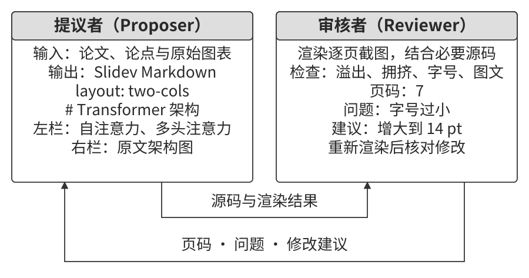
- 提议者（Proposer） 阅读论文，规划讲解结构，编写 Slidev 源码，并根据反馈修改页面。
- 审核者（Reviewer） 通过工具渲染页面，使用视觉模型检查内容密度、可读性、布局和图文对应关系，返回包含页码、问题类型、严重程度和修改建议的结构化反馈。
反馈应能直接指导修改。例如，“第 3 页要点过多，拆成方法概览和计算步骤两页”；“第 7 页代码字号过小，先增大至 14 pt，再检查投影可读性”。事实错误与图表误读优先修正，随后处理布局和视觉细节。
局部修改还需要说明修改哪一个对象。飞书幻灯片里的豆包工作允许用户选中页面元素，再通过浮动工具栏提出编辑要求。17 假设同一页有两个文本框，一处是原始访谈引文，另一处是汇报人写的总结。用户选中总结，要求“压缩到两行”。选中的文本框限定了改动范围。总结可以改写，旁边的引文要保留受访者的原话。
提议者修改后重新渲染，审核者检查新版本，并确认上一轮问题是否解决。循环设置两类退出条件：达到明确的内容与版式要求，或用完轮数、时间与费用预算，例如最多修改 5 轮。交付时保存当前版本及尚待处理的问题，便于后续审阅。
这与第四章的操作审批共享提议者—审核者模式。操作审批主要判断某次行动能否执行；内容审查则通过多轮反馈改进产物。两者都需要共享任务要求、给出可定位的判断依据，并由 Harness 决定后续流程。采用不同模型家族可以提供另一种审查视角。
笔者看重双 Agent 分工在上下文管理上的优势。 两个角色可以分别保留各自需要的信息：审核者每轮接收最新截图、审核标准和必要的问题清单；提议者保留源码、修改目标和结构化文本反馈。页面图像留在审核者的上下文中，主轨迹通过简短的文本反馈持续推进修改。每轮审核都围绕最新页面展开，既减少历史截图的干扰，也控制了上下文增长。
实验 5-6 ★★：基于论文的 PPT 自动生成
本实验使用《Attention Is All You Need》的论文 PDF，生成 20 页 Slidev 幻灯片。Agent 提取论文结构和要点，使用三张带来源记录的原论文图，逐页组织讲解。渲染后检查文字溢出、图表可读性及图文对应关系，再按反馈修改。
对照比较单 Agent 自审和提议者—审核者分工。本次运行中，两份最终文稿在同一独立评分流程中均获得 95 分；分工方案的峰值输入约为 2.4 万 token，保留历史截图的单 Agent 方案约为 9.3 万 token。
实验 5-7 ★★：论文讲解视频的自动生成
在幻灯片基础上，Agent 可以为每页编写口语化讲解，解释图中的对象、关系和结论，再调用 TTS 合成语音。讲稿与页面一起交给视觉审核者，检查讲到的元素是否出现在画面中，以及描述是否与图表一致。
制作视频时，实验沿用前一节的生成流程，选用较早的一份 22 页稿（v2）。按顺序抽取 12 页后，视频最后一个画面来自原稿第 21 页。前一节比较评分和用量时用的是后来的 20 页稿（v9）。选好页面后，使用 Kimi 生成讲稿、Qwen 视觉模型审查图文关系，再由 Fish Audio 合成逐页语音。FFmpeg 根据每段音频的实际时长设置页面展示时间，合成约 8.6 分钟的讲解视频。
图5-6 中，幻灯片、讲稿和语音要到最后才合成视频。有些问题得在这一步才能听出来：换页时一句话是否还没说完，越往后声音和画面是否越对不上。
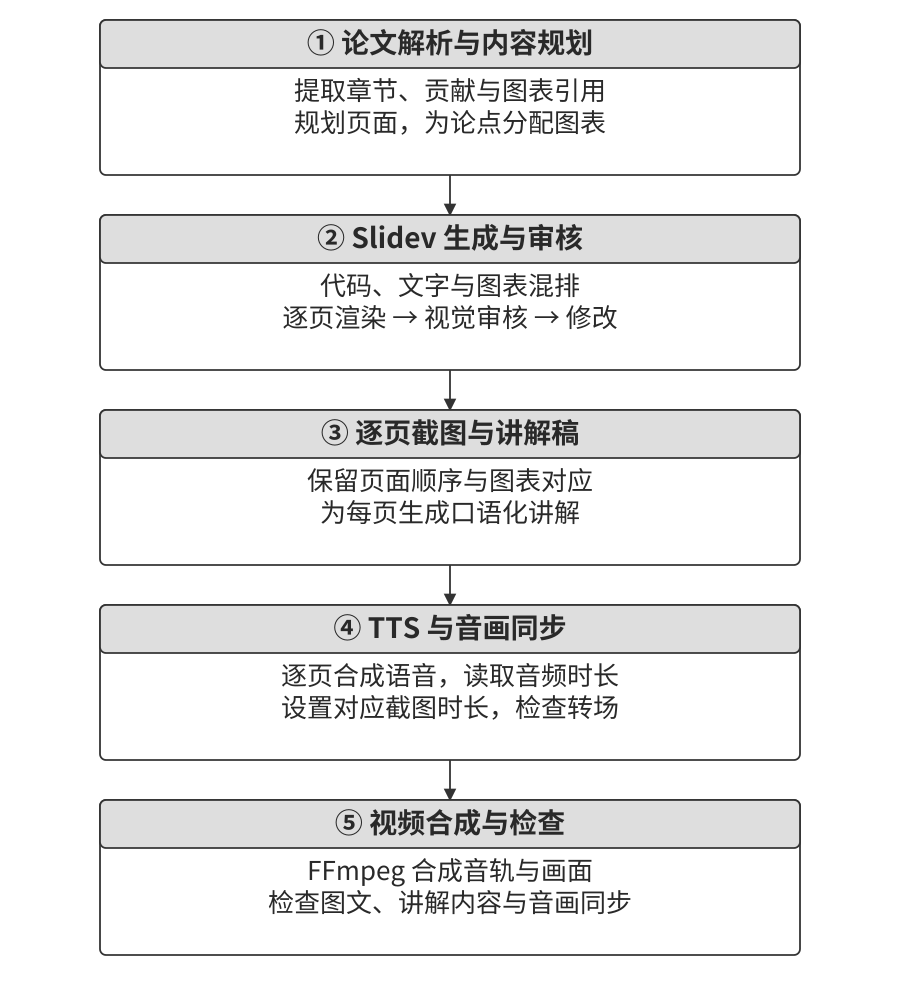
视频编辑 Agent。
视频编辑中能够用脚本表达的操作，应优先走程序接口。 时间轴、图层、字幕和音轨分布在复杂的 GUI 面板中，反复定位和拖动会增加延迟与误差；程序接口可以直接用时间区间、轨道和效果参数表达操作。Blender 的 Python 接口与 FFmpeg 都能把一部分编辑任务组织成可重复执行的脚本。
Agent 可以先理解“把冲浪部分剪出来”这样的要求，再定位素材中的目标区间，生成裁剪、排列和音轨处理代码。提议者负责编辑计划与脚本，审核者检查渲染结果；遇到遗漏、无关片段或字幕遮挡时，反馈具体时间点和问题，交给提议者修改。关键帧适合检查场景与布局，运动连续性和音画同步还需要检查相邻帧或连续片段。
实验 5-8 ★★：基于 API 的智能视频剪辑
本实验把目标定位、脚本生成和效果审查串成一个流程。先将视频引用、目标问题和抽帧间隔交给视频分析子 Agent，由它处理大量画面，向主 Agent 返回时间区间与依据。
定位分两步。第一步每 10 秒抽取一帧，寻找目标的大致范围，例如“冲浪在第 40—110 秒”；第二步围绕候选区间及邻近边界，每秒抽取一帧，进一步确定开始和结束位置。短于粗采样间隔的场景可能落在两帧之间，可以根据目标持续时间增加采样，或回看两次抽帧之间的画面。
确定区间后，提议者生成 Blender Python 脚本，执行裁剪及所需的字幕、变速等操作。审核者查看预览，指出需要调整的边界和效果；修改通过后再输出完整成片。
实际剪的是一只大白兔独自在草地上走过的镜头。每 10 秒看一帧，模型把范围定在第 10 至 20 秒。若从第 10 秒直接下剪，镜头开头就会丢掉一截。于是程序把前后各放宽 5 秒，在第 5 至 25 秒间每秒看一帧，把候选区间缩到第 9 至 12 秒。审核者又发现片段夹带了相邻画面，修订后的区间为第 9.25 至 11.00 秒。对照人工标注的第 9.08 至 11.20 秒，开始晚了 0.17 秒，结束早了 0.20 秒，两端都达到了误差不超过 3 秒的要求。
时间码只能检查剪在了哪里。把同一套字幕和慢动作放到一段故意选错的画面上，审核者还能认出错误吗？实验先让它检查第 0 至 3 秒的对照片段，再看修订后的渲染。审核对象包括画面里的大白兔、底部字幕和变速后的时长。
3D 与工业零件：选择合适的生成方式。
尺寸与装配关系是硬约束的工业零件，优先采用参数化代码生成；主要追求自然形态与外观的对象，优先考虑生成模型。 这个选择取决于产物能否用少量参数精确描述，以及修改后需要保持哪些关系。CadQuery、OpenSCAD 和 Blender 脚本提供可编辑的构造过程，混元 3D 等模型则利用学到的形态先验生成复杂外观。
描述是否适合参数化。 一个简化法兰盘可以用外径、厚度、孔位圆直径、孔径和孔数表达主要几何关系。代码将参数与构造步骤对应起来，适合反复调整。一盆绿植、一块太湖石或一张人脸则包含大量不规则形态，生成模型可以帮助构造外观，程序化方法也可以通过生长规则、随机过程和资产组合生成细节。
精度如何检查。 对孔径 5 mm、公差 ±0.05 mm 这样的要求，需要先明确单位、坐标系和测量方法，再比较模型尺寸与规格。参数化模型可以直接检查几何对象；网格可以通过截面、孔洞、包围尺寸等方法测量，并计入离散化误差。
如何保存和修改。 B-rep（边界表示）用面、边和顶点描述实体边界，三角网格则用面片近似表面。CadQuery 可以导出 STEP 用于 CAD 数据交换，也能导出 STL 网格；可编辑的参数与构造逻辑保存在 CadQuery 源码中19。进入 CNC 加工流程还需要工艺规划、刀具路径和机床适配。
例如，把安装孔从适配 M5 改为适配 M6，可以修改孔径参数，重新生成后复核外径、厚度和孔位是否保持一致。生成模型的修改方式取决于接口能力，可以重新生成，也可以结合局部编辑和后续几何处理。
两条路线组合时，也应明确分工：尺寸和装配关系交给参数化代码，纹理与自由外观交给生成模型。关键尺寸需要反复精确修改时，可编辑的构造过程比一次生成的外观更有价值。
实验 5-9 ★★：同一个零件的两种生成路线——代码与生成模型
本实验要求生成外径 80 mm、厚度 10 mm 的法兰盘，在直径 60 mm 的孔位圆上均布四个安装孔。为明确装配含义，初始规格采用适配 M5 的 5.5 mm 通孔，修改请求改为适配 M6 的 6.5 mm 通孔。
代码路线由模型生成 CadQuery 程序，执行后导出 STEP 与 STL；生成模型路线先生成产品参考图，再交给混元 3D 生成网格。检查外径、厚度、孔数、孔径、孔位和安装面，并记录单位与轴向。
怎样看出模型只改了指定的尺寸？对照修改前后导出的 STL，四个安装孔的平均直径从 5.499 mm 增至 6.499 mm；两件的外径都是 80 mm，厚度都是 10 mm，孔位圆直径按三位小数均为 60.000 mm。生成模型路线的原始网格缺少明确的物理尺度。测量程序沿 Z 轴取中截面，没有找到孔的内环。要查明四个孔是否贯穿盘体，还需认出安装面，沿它的法向在不同深度取截面。重新生成后，整体形态和朝向都发生了变化。
最后换一道题：要交付一张看起来自然的盆栽图片，该怎样验收？实验用 matplotlib 绘制一张盆栽，用 Gemini 生成另一张，再让同一个视觉模型按十分制评自然度。两张图分别得到 3 分和 8 分。这个分数回答的是评审模型觉得哪张图更像真实植物。回到法兰盘，即使产品图看起来像有四个孔，装配仍要在三维零件上核对孔的位置和直径。
代码作为系统适配器
外部服务的接口、鉴权方式和数据格式各不相同。Agent 可以阅读文档与响应样本，生成 HTTP 客户端、配置鉴权头、解析返回值，再把上游字段转换成下游需要的结构。代码在这里承担系统适配工作，将已有服务组合为新的任务流程。
例如，从支付服务读取的金额字段若以分计，而报表按元展示，能把 JSON 解析成功只说明格式相容。一笔 25 元的交易，在上游是整数 2500。直接把这个数填入报表，25 元就成了 2500 元。
适配器需要明确输入输出、错误处理与版本范围。样本帮助模型理解字段，接口约定和测试则检查缺失值、分页、异常响应及版本变化。凭证由执行环境管理，生成代码通过受控接口使用授权能力。验证通过后，适配器可以保存和复用，后续遇到格式变化再进入修改流程。
只有图形界面的系统也可以采用类似方法。Agent 先通过第六章介绍的 Computer Use 完成任务，再把稳定的操作步骤固化为 RPA 工具。界面控件、登录状态和页面流程变化时，工具需要检测偏差并重新定位。第九章将进一步讨论如何从成功轨迹中提取、验证和复用工作流。
Agent 日志解析和可视化。
一次复杂任务可能包含多次模型请求、工具执行和子 Agent 交互。日志概览呈现步骤关系、状态与耗时，展开后则显示具体输入输出，帮助读者追踪某一步发生了什么。新增字段、嵌套结构和格式版本都会影响解析与展示。
自适应解析通过“发现变化—生成解析器—验证结果”的循环处理这些变化。解析失败时，系统保存原始样本、错误位置和预期字段，再对照接口约定与生产者版本判断变化是否符合预期。确认是格式升级后，才让 Agent 编写新解析器。如果是写日志的程序出了错，就保存原始日志并报告故障，以免新解析器把错误也当成正常格式。新写的代码先在受限环境中运行，先检查字段及其含义，再以正常样本、缺字段样本和旧格式回归用例验证。通过后注册新解析器，保存版本与适用格式；失败样本继续保留，便于追踪和重试。
解析与展示各有检查方法。程序检查时间戳、状态、数值类型和调用关联；浏览器渲染检查页面是否正常工作，视觉模型辅助检查表格、时间轴与标签是否清楚。热更新时保留上一版本及回退入口，使新格式支持可以逐步进入运行系统。
实验 5-10 ★★★：自适应的日志解析系统
本实验先运行两个日志产生进程，分别输出竖线分隔格式和嵌套括号格式。初始解析器无法处理这些样本，系统随后请求模型生成两个解析函数，测试通过后热加载，再解析原先失败的日志。
第一种格式提取
timestamp、level、module、step和message；第二种还涉及工具名、耗时与状态。运行记录中，两类各三条日志完成解析，新建引擎也能加载已保存的解析器，继续处理混合日志流。解析结果由 Chromium 渲染为表格，视觉审核检查列名、行内容与可读性。
Agent 执行日志自动分析和问题诊断。
解析出结构化轨迹后，Agent 可以结合架构文档与 PRD（产品需求文档），比较预期流程和实际行动。例如，退款前有没有查过这笔订单能不能退？库存服务超时后，程序有没有按约定改查缓存？
问题报告可以包含优先级、模块、现象、证据和改进建议。Agent 还可以据此生成回归测试，把问题对应的输入与验收条件固定下来。测试框架在受控环境中重放请求或读取保存的工具响应，比较缺陷版本与修复版本的行为。涉及外部写入的操作使用隔离环境或替代接口，保持重放的影响范围可控。
断言应对应需要验证的属性。例如，日志里出现过退款检查，只能说明程序查过。要知道这笔钱退得对不对，还得看程序是不是先查后退、检查结果是否允许退款，以及订单最终是什么状态。
诊断经过复核，Agent 就可以在获得相应授权后通过 MCP 建立 GitHub Issue，按模块建议负责人。若同一缺陷已有工作项，就把新证据并进去。
实验 5-11 ★★★：生产日志的智能诊断系统
本实验用本地 HTTP 服务产生两条业务轨迹，一条记录显示系统没查订单能不能退就退了款，另一条显示库存查询超时后没有改从缓存取数。模型结合架构文档与需求说明，生成包含轨迹和轮次引用的问题报告，再生成三个可执行回归测试。
图5-7 把一份诊断报告放在轨迹和回归测试之间。报告指出“系统跳过检查，直接退了款”。回到轨迹里找证据：调用记录里少了哪一步？再往下看测试：如果以后又漏掉这一步，测试能发现吗？
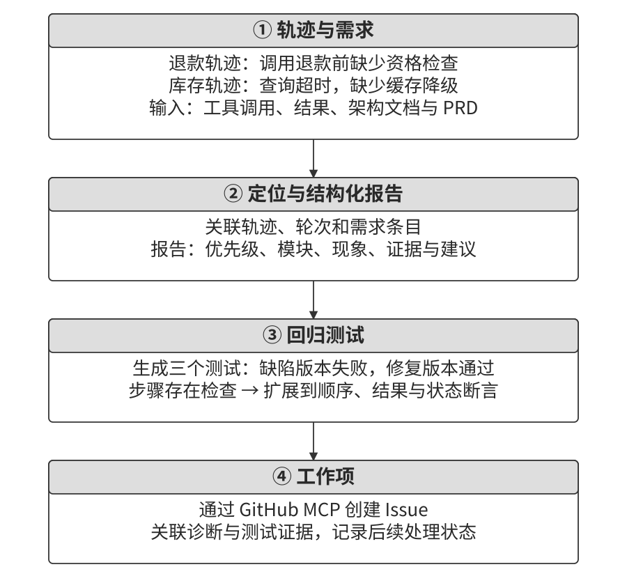
三个测试在缺陷版本上全部失败，换成修复版本后全部通过。其中一个测试只判断程序有没有调用过退款检查工具。即使程序先退钱，事后才查这笔订单能不能退，这个测试也会通过。运行记录中还保存了 GitHub MCP 创建工作项的回执，可以据此找到诊断报告交给开发者后对应的工单。
代码作为生成式 UI
如果用户还要亲自改动 Agent 正在处理的材料，可以把界面做成两人共用的工作台。以行程表为例，让用户看见助理正改哪一站、接手修改、确认或撤销某项变更。若用户刚把出发日改为周五，助理随后就应在这份新行程上继续工作。让两边共享同一份可见状态，并约定当前由谁控制正在编辑的字段，才有可能边看边改。
想象用户要比较三种出行方案。目的地尚未确定时，对话便于追问；目的地确定后，让用户直接选日期、填写人数比来回核对几段文字方便；最后比较总价随日期的变化，一张图表能把差别摆在眼前。Agent 按任务生成相应的表单、图表或应用界面，让用户直接填写、选择、操作，这就是生成式 UI（Generative UI）。
用协议描述界面与交互。
生成界面有两条实现路径：输出 HTML、JavaScript 等代码，交给受控环境执行；输出声明式结构，由客户端组件渲染。前者便于实现定制布局和交互，后者把可用能力限定在客户端提供的组件与动作范围内。
A2UI（Agent-to-User Interface）采用声明式描述。Agent 生成结构化消息，表达组件、数据绑定和更新，客户端用自己的组件呈现界面20。例如，应用可以提供卡片、按钮、文本框和表格组件，Agent 据此描述一个标题为“销售数据”、包含三行两列的表格。组件目录还可以扩展图表和地图等能力。
AG-UI（Agent–User Interaction）负责 Agent 与前端之间的事件交互，传递消息、工具调用和状态更新，也可以承载 A2UI 的界面消息。两者组合后，A2UI 描述要展示的内容，AG-UI 连接后端执行与前端交互。
客户端可以逐步接收界面更新，并通过适配的渲染器在 Web、移动端或桌面端展示。客户端验证组件属性、数据绑定和动作请求，服务端继续检查业务权限；组件中的链接、富文本和数据访问也需要各自的处理规则。
直接生成代码时，则需要检查依赖、资源访问和执行权限，并隔离生成界面与宿主应用的敏感状态。外部材料中的提示注入可能影响生成过程，浏览器中的脚本执行风险还取决于页面加载和隔离方式。
用 HTML 交付交互式成果。
对于包含数据、演示和持续更新结果的研究交付，笔者优先采用 HTML 网站。 长篇线性 Markdown 汇报要求读者不断翻找上下文；交互式网页可以把说明、数据和演示放在同一个入口：读者查看图表，筛选感兴趣的样本，展开某项结果的细节，再操作演示理解系统行为。Agent 也可以随任务推进更新页面，使它持续记录当前成果与证据。
以笔者的研究实践为例，每个研究项目都有一个交互式网站，把它同时作为研究过程中的活文档和最终交付物，并让 Agent 随实验推进持续补充内容。这些网站主要承担三项工作。
一是实验数据追溯。页面将样本、提示词、模型回复和评分关联起来，支持逐条检查。例如，同一类回复总是得低分时，可以沿着评分记录找回原始回复和提示词。
二是训练指标监控。笔者把反映训练内部状态的信号称为“内科指标”：训练与验证损失、梯度范数、学习率，以及强化学习中的奖励、KL 散度和策略熵等。语言模型还可以用困惑度衡量它对给定文本序列的预测表现。就像体检中的生理指标，这些曲线有时能比最终任务成绩更早暴露问题。把它们与任务准确率一起查看，有助于定位不收敛、梯度异常和训练退化发生的阶段。
三是运行原理展示。介绍几个模块怎样配合时，页面可以让读者改动一个输入，查看中间状态，再把输出的变化和实验记录对照起来。
工作持续几个小时，用户怎样抽空接手？笔者使用 Coding Agent 时，希望一句口头指令能准确送到经办的 Agent，想看成果时能随时打开，有了新版本或遇到需要我决定的问题时再来提醒。例如，两份报告正在同时生成。用户打开销售报告，指着第二张图说“这张按净收入重画”。界面应把当前报告和图表标识随指令一起送出。图改好了，通知可以直接打开新版；若“净收入”有两种可用口径，助理应把要选的两种口径列给用户。
澄清用户意图。
用户说“我想订一张去北京的机票”时，目的地已经明确，出发城市、日期和单程或往返仍待补充。Agent 可以在一轮对话中集中提问，也可以生成表单，让相关条件在同一页面上呈现。
表单中的控件对应不同类型的信息：文本框收集开放输入，下拉菜单与单选控件列出可选项，复选框支持多选，日期选择器帮助填写时间。JavaScript 可以表达级联关系，例如选中“往返”后显示返程日期，并检查返程不早于出发。选择改变时，还要同步清理或忽略已失效的字段。
图5-8 取自下面实验的一次运行。沿着这笔提交往下看：浏览器返回的四个字段里没有目的地，模型从哪里知道旅客要去北京？
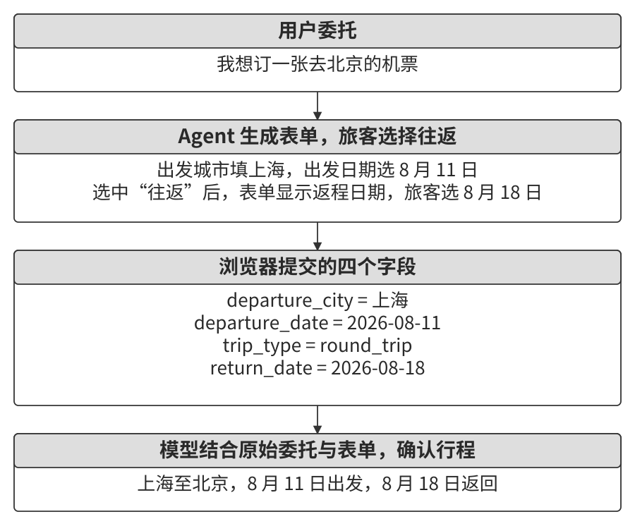
实验 5-12 ★★：动态表单生成的意图澄清系统
本实验从“我想订一张去北京的机票”出发，让模型生成 HTML 表单：出发城市使用文本框，出发日期使用日期选择器，旅行类型提供单程与往返选项，返程日期在选择往返时显示。
程序把最初的委托和表单数据一起交回模型。如果只保留提交的字段，即使每个控件都填对了，仍然缺少目的地。
用同一份表单再试一步：填好返程日期后改选单程。页面藏起了返程输入框，提交的 JSON 却同时保留了单程和 8 月 18 日的返程日期。改选单程时，客户端还得清掉失效的返程日期。
生成 SQL 查询。
用户可以用自然语言提出数据库查询，Agent 根据表结构和业务口径生成 SQL。展示完整查询表格时，笔者优先采用 Artifact 模式，让结果从数据库直接进入界面。 让模型读取并逐行复述大表格，会增加 token 用量和等待时间，还引入抄写错误。SQL 保存为可检查的查询产物；需要分析原因或总结趋势时，再把必要的聚合结果交给模型。
图5-9 中，用户要看各部门的在职人数，页面可以直接显示数据库返回的统计表。如果用户接着问“市场部比研发部多几人”，模型只需取表中的 9 和 5 就能算出相差 4 人。若追问“上个月也差这么多吗”，眼前这张表就不够用了，得按上个月的统计日期重新查询。
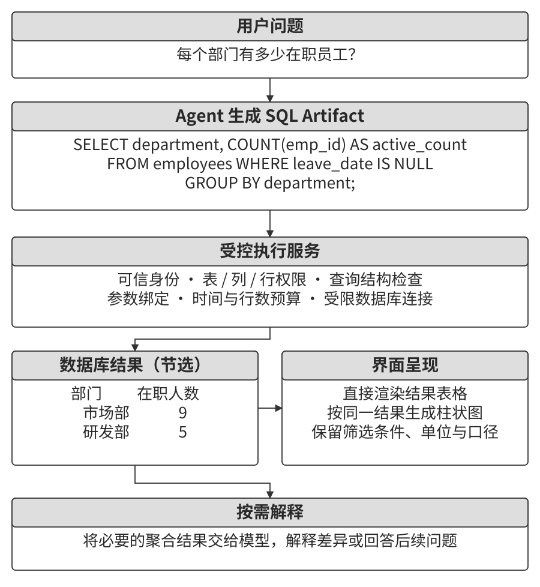
执行服务根据可信身份确定可访问的表、列和行，使用受限数据库账号，并对 SQL 结构和操作类型进行校验。查询场景可以限定为批准的只读查询，控制函数调用、时间预算、返回行数与数据范围；用户输入的值通过参数化绑定传入。
Agent 还可以生成可视化产物，例如将部门汇总结果展示为柱状图。执行服务把查询结果交给受控的可视化运行环境，界面只展示允许的数据与交互。
实验 5-13 ★★：自然语言交互的 ERP Agent
本实验以 ERP（企业资源规划）中的员工与工资查询为例，学习如何从业务问题生成 SQL，并让数据库结果直接进入页面。PostgreSQL 中建立两张表：员工表包含员工 ID、姓名、部门、级别、入职日期和离职日期，离职日期为空表示在职；工资表包含员工 ID、发薪日期和工资，每位员工每月一条记录。
Agent 根据这两张表处理以下十个问题：
- 平均每个员工在职多久？
- 每个部门有多少在职员工？
- 哪个部门员工平均级别最高？
- 每个部门今年和去年各新入职多少人？
- 前年 3 月到去年 5 月，A 部门的平均工资？
- 去年 A 部门和 B 部门的平均工资哪个高？
- 今年每个级别的员工平均工资？
- 入职一年内、一到两年、两到三年的员工最近一个月平均工资？
- 去年到今年涨薪幅度最大的 10 位员工？
- 有没有拖欠工资（某月在职但未发薪）？
查询前需要明确统计口径。例如，在职员工的任职时长计算到查询基准日，离职员工计算到离职日；“平均工资”需要确定按发薪记录还是按员工平均；涨薪排名需要处理去年无记录的员工。
本次运行生成并执行了十条 SQL，结果均与独立参考计算一致，随后由浏览器直接渲染表格。模型接收表结构、任务与必要的执行反馈，数据库行数据通过应用传到界面。
动态生成软件。
Agent 可以从需求开始生成界面和交互逻辑，再根据用户操作继续修改。Anthropic 在 2025 年推出的临时研究预览“Imagine with Claude”展示了这种交互：用户探索界面，模型持续生成相应的软件体验21。
面向实际产品，笔者更看好在已有框架上进行定制。 从零持续生成整个应用会反复付出生成、渲染和验证成本；保留稳定框架，再开放用户关心的界面与流程，能更快地提供可靠的个性化体验。用户提出“把按钮改成蓝色”“在侧边栏添加快捷菜单”“换一种更易读的字体”，Agent 定位相关组件、修改代码，再通过预览检查效果。基础框架提供稳定的页面结构与业务接口，定制范围可以从颜色、字体逐步扩展到布局和组件。
开发环境的 HMR（Hot Module Replacement，热模块替换）可以在代码变化后更新受影响的前端模块。是否保留状态，取决于框架集成、更新边界及修改类型；需要完整刷新时，应用还应保存必要状态。FastAPI 开发模式中的 reload 则重新加载服务端程序，两者分别作用于前端模块和后端进程22。
实验 5-14 ★★：对话式界面定制系统
本实验构建 React 前端与 FastAPI 后端组成的聊天应用，在开发环境中启用前端 HMR 和后端 reload。模型根据连续三轮要求修改颜色、字体和标题，浏览器检查每次修改后的实际界面。
本次运行记录了 Vite 的 HMR 事件，三轮修改均未发生整页导航，已有聊天状态得到保留，最终构建通过。
让权限边界独立于动态业务代码。
业务代码越容易由 Agent 动态改写，最终的权限边界就越应下移到稳定的数据访问层。 传统应用将权限判断写在经审查的业务代码中；生成代码不断变化后，某条新路径可能遗漏同样的检查。让每次读写都经过独立的数据访问服务，才能把权限约束保留下来。例如，招聘应用可以动态生成候选人列表和操作表单，候选人属于哪个组织、招聘人员可以更新哪些字段，则由受信任的数据访问服务持续检查。
这里的设计目标是：即使生成代码出现错误，受信任的数据访问层仍能强制实施权限约束。 这延续了第一章的数据层护栏：把需要强制遵守的规则放在所有相关操作都要经过的位置。数据库行级安全策略可以限制记录访问，约束和校验器检查合法状态，受控视图、存储过程或数据服务提供允许的操作。应用层可以提前检查并向用户解释，最终读写仍由受信任的数据服务和数据库权限控制。
每次操作还需要可信的访问上下文（access context），包含用户、租户、角色或 Agent 身份。认证服务与受信任运行时负责建立和绑定身份，数据服务据此授权。动态代码获得完成任务所需的受限接口，凭证和策略管理权限由独立组件保管。所有数据库连接、辅助查询及后台处理都应遵守同一访问范围。
例如，PostgreSQL 的行级安全需要结合数据库角色配置使用。应用连接采用受策略约束的角色，应用账号无权修改访问策略23。规则与身份绑定机制经过独立审查，业务界面则可以在这个范围内持续变化。
权限与数据完整性还承担不同职责。招聘人员有权修改候选人记录后，状态机继续检查是否允许从“已筛选”进入“已面试”；工资校验器读取关联职位，检查期望工资是否位于职位范围；引用检查确认职位和候选人关系有效。
实验 5-15 ★★★：动态生成软件的权限内嵌数据对象
本实验提供 PostgreSQL 之上的 Python 对象存储原型，将权限规则、校验器、对象关系和后续反应声明放在数据类型中。读取时检查访问权限；创建和更新时，先执行权限与业务校验、检查引用关系，再持久化，随后将声明的后续反应加入队列，并限制反应链深度。
招聘示例包含职位、候选人、面试和评估等对象。候选人依次经历申请、筛选、面试、发放录用通知与录用，相关阶段也可以进入拒绝状态；工资范围来自关联职位。示例设置了正常状态更新、无效状态跳转、超出职位工资范围和不同租户访问等检查，帮助读者理解授权与业务校验各自处理什么问题。
原型通过
AccessContext表达用户、角色与组织属性，教学脚本直接构造这些上下文来模拟不同身份。部署时由认证入口建立上下文，并将对象存储与生成代码分隔在明确的服务或权限边界两侧。
代码创造代码：Agent 自举
代码生成能力也可以用于开发 Agent 本身。创建者接收任务需求，生成或修改新 Agent 的提示词、工具和运行循环，再通过测试与实际交互检查产物。图5-10 展示了这一自举循环：已有实现提供起点，任务反馈推动修改，验证结果决定哪些变化可以保留。
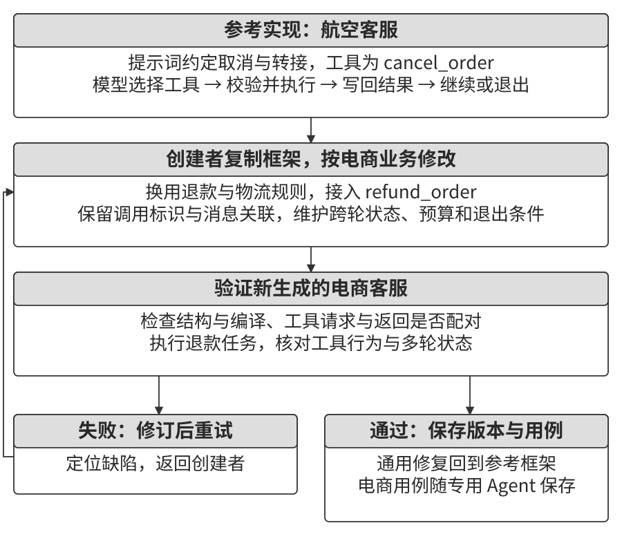
如何分辨一次修改改善了通用能力，还是碰巧适应了刚见过的题？保留一个没有送给创建者的任务。例如，用一家商店的数据开发价格监测 Agent，再交给它另一家商店的样例，同时重跑原来的任务。
维护 Agent 的运行环境。
新 Agent 的运行依赖配置、凭证、会话状态、服务和沙盒。OpenClaw 的 doctor 命令提供了一个维护工具的例子：它检查旧配置迁移、OAuth 凭证状态、会话锁、插件安装、网关健康和沙盒镜像等问题，并给出修复建议或执行相应修复24。
这些确定性检查可以成为自我维护流程的基础。检测规则覆盖已知故障，修复动作具有明确的输入与预期结果。进一步设计 Agent 诊断流程时，可以把尚未解决的问题连同日志、配置和检查结果交给模型，让它说明打算改哪个配置、怎样改；执行层检查权限与修改范围，再运行健康检查和回归测试。配置快照、变更记录与回退入口帮助系统在修复失败后恢复工作。
以参考实现承载工程经验。
创建专用 Agent 同时涉及领域逻辑和通用基础设施。检查生成结果时，可以从四类问题入手：
- 上下文与运行循环。 保留角色、工具调用标识和工具结果之间的关联，检查多轮状态、终止条件、预算及异常恢复。结构化消息便于维护协议关系；稳定前缀则为提示缓存创造条件。
- 工具接口。 工具说明交代用途、适用条件和使用边界，参数包含类型、含义与具体例子。执行层继续验证参数、身份和业务状态。
- 模型与 API 选择。 模型容易沿用训练数据中高频出现的旧模型和旧接口，代码写得流畅也可能选型滞后。为创建者提供经过维护的选型资料，或让它检索官方文档，核对模型能力、接口版本与调用方式。生成后的真实调用检验配置是否可用。
- 依赖与生态兼容性。 检查库的维护状态、版本和接口变化，用依赖安装、编译检查与测试验证组合后的程序。
创建专用 Agent 时，笔者优先让创建者复制经过验证的参考实现，再做领域修改。 提示词很难穷尽消息协议、状态管理和恢复机制中的所有细节，参考代码却能把这些工程经验直接带入新系统。模型即使擅长编程，也可能漏掉任务描述中没有明说的运行条件；复用框架可以减少这类重复失误。创建者复制合适的基础框架，调整系统提示词以匹配新角色，增删领域工具，修改业务逻辑，并补充对应测试。消息处理、调用关联、状态管理与退出路径由框架提供，领域变化则通过新增用例验证。
若模板快了许多，怎样排除“少做了几项功能”这个解释？下面让两组创建者交付同一种 Agent，交给同一套检查。
实验 5-16 ★★★：开发一个能创造 Agent 的 Agent
请同一个创建者模型构建一个发布审核 Agent：读完一组部署检查记录，只要有必检项未通过，就拒绝发布并指出依据。从零创建时，模型需要编写运行循环、工具协议、领域工具、命令行入口和测试。模板路线先复制一套能检查结构化记录的 Agent，模型只需填写领域规格。例如，状态存在哪个字段，哪些值表示通过？创建脚本根据规格生成系统提示、工具定义和说明文档。已有的 Python 工具读取规格执行检查。两条路线都体现了元编程：用程序生成或修改其他程序。
图5-11 中，两条路线汇合在同一套验收条件上。
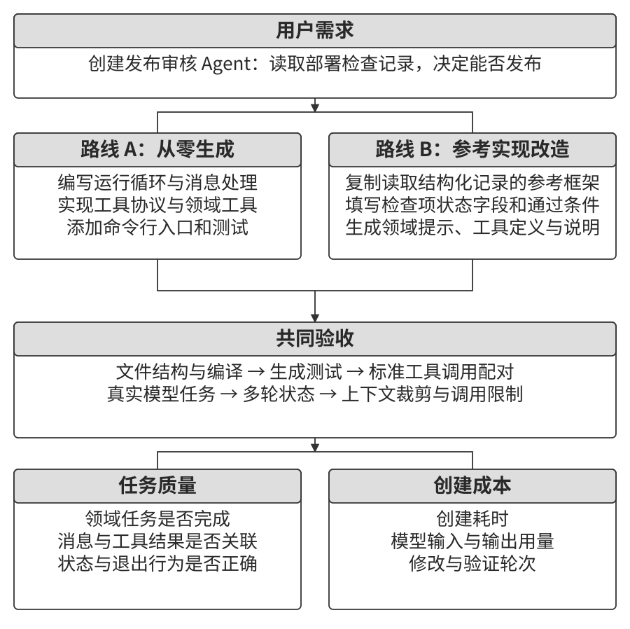
两条路线使用相同的任务要求和验收条件。先检查产物结构、编译与测试，再检查标准消息中的工具调用与结果关联，最后运行真实模型任务和多轮交互，验证上下文裁剪、状态管理和调用次数限制。
保存的 Kimi K3 对照中，两组各通过 39/39 项确定性检查，也都通过了真实模型任务和多轮状态检查。模板路线创建时用了 1,181 token、约 25 秒，从零路线用了 381,814 token、约 90 分钟。
本章小结
Coding Agent 较早成熟，有一个容易被忽略的原因：软件工程已经有类型系统、测试套件、版本控制和调试工具。 代码改错了，测试往往能指出哪组输入得到了意料之外的结果；换一种改法，还能用原来的输入再试。把这套经验用到其他任务，先问三个具体问题：怎样发现错误，怎样恢复到已知状态，何时需要停下来请人接手？例如退款调用中途断线，Harness 应先查账再决定是否重试，否则一次故障恢复就可能变成第二次退款。
代码也能把一次判断保存成能反复使用的东西。数学题中的枚举和逻辑题中的约束可以交给程序逐项检验；退款规则可以写成执行入口的校验，让服务端读订单里的真实状态再决定是否放行。日志格式变了，可以改解析器，再把这次出错的样本留下做回归测试。这三种场合都能运行代码，但判据各不相同：解是否满足题目条件，退款是否符合政策，新的解析器能否读出原来漏掉的字段。
交付的是文档、视频或几何模型，还要检查渲染效果、音画是否同步或尺寸是否准确，安排审核者看一遍实际产物。交付的是表单、查询或可视化，除了看用户能否读懂和操作，还要检查背后的执行服务是否按权限取数。如果代码生成的是另一个 Agent，笔者倾向于先复用经过验证的框架，生成领域工具和业务逻辑，再检查调用协议、跨轮状态和实际任务结果。这样积累下来的工具、校验器和测试，下一次任务可以接着用。
代码能让任务反复执行，环境却未必等它执行完。一个查询还在运行，用户可能已经改了主意。第六章讨论这种变化怎样进入一次正在进行的交互。
思考题
- ★★ 为一个需要读取项目文件、安装依赖和运行测试的 Coding Agent 设计沙盒。你会如何配置文件、网络、进程和资源权限？任务需要扩大权限时，怎样表达请求、检查范围并保留记录？
- ★★★ 创建者连续生成和修改多代 Agent 时，框架缺陷与领域错误可能逐步累积。如何用参考版本、回归测试、行为评估和回退机制追踪这种变化？
- ★★ 日志格式变化可能来自正常升级，也可能来自生产者缺陷。自适应解析系统应保留哪些证据，依据哪些条件决定新增解析器、报告异常或暂停处理？
- ★★ 提议者—审核者循环中，审核者认为页面信息密度合理，用户却觉得拥挤。如何把用户偏好转化为示例、评分条件和交互反馈，并检查后续修改是否符合要求？
- ★★ Coding Agent 可以更新知识库、架构文档和项目指令，也可以把操作序列固化为代码。如何识别冗余或过时的规则，为规则设计适用范围、验证方法和退出条件？从一次成功修改发展为第九章讨论的持续进化，还需要哪些积累与评估机制？
- ★ 对远程协作友好的团队通常也便于 Agent 获取工作信息。请检查一个熟悉项目的需求、架构、决策记录和验收标准，列出最需要补充的文档，并说明它们能帮助 Agent 完成哪些具体任务。
- ★★★ 对同时访问私有数据、处理不受信任内容、进行外部通信并使用持久记忆的 Agent，如何安排身份授权、来源标记、数据流检查与记忆写入审核？请用一条正常业务流程说明这些检查的位置。
- ★★ 在 SQL 与 HTML 的 Artifact 模式中，模型生成产物，执行服务处理查询或渲染，界面直接呈现结果。哪些信息适合再交给模型解释？如何检查查询权限、资源预算、页面隔离和展示结果的一致性？
- ★★ 工具根据数据库中的业务状态校验规则，参数说明则帮助模型准备调用。请以取消预订为例，说明自然语言政策、参数例子、执行层校验和边界测试各自承担什么职责；政策变化后，哪些内容需要同步更新？
-
千问办公帮助中心，千问办公简介，介绍上传数据文件、分析数据和生成可视化报告等功能。 ↩
-
微软研究院，Data Formulator 的能源分析示例及 0.7.0 版图表与数据表的关联实现。 ↩
-
OpenClaw，Agent workspace 与 Memory overview，介绍工作区、文件记忆及检索机制。 ↩
-
Anthropic，How Claude remembers your project；Cursor，Rules，介绍项目指令及按范围加载的规则。 ↩
-
LangChain，Improving Deep Agents with harness engineering，2026 年 2 月 17 日。 ↩
-
Anthropic，Effective harnesses for long-running agents，2025 年 11 月 26 日。 ↩
-
Cursor，Securely indexing large codebases 与 Search，分别介绍嵌入索引方案与后续本地搜索机制。 ↩
-
Anthropic，Code intelligence plugins，介绍通过 LSP 提供定义、引用与实时诊断。 ↩
-
Anthropic，Tools reference，Edit 工具；Cursor，0.50 更新记录，2025 年 5 月 15 日，介绍 Search & Replace 的引入；1.3 更新记录同时记录 Search & Replace 与 Apply 的优化。 ↩
-
Cursor，Editing Files at 1000 Tokens per Second，介绍将修改描述应用到原文件的专用模型。 ↩
-
Simon Willison，The lethal trifecta for AI agents: private data, untrusted content, and external communication，2025 年 6 月 16 日。 ↩
-
Anthropic，Making Claude Code more secure and autonomous with sandboxing 与 How we contain Claude across products，介绍文件系统、网络及产品隔离边界。 ↩
-
Li, Bojie and Noah Shi，Whose Side Is Your Agent On? Multi-Party Principal Loyalty in LLM Agents，2026。 ↩
-
Stephen Wolfram，Wolfram|Alpha as the Way to Bring Computational Knowledge Superpowers to ChatGPT，2023 年 1 月。 ↩
-
Sierra Research，τ-bench: A Benchmark for Tool-Agent-User Interaction in Real-World Domains，提供航空、电商场景的政策、工具和交互任务。 ↩
-
Zheng 等，PPTAgent 论文，EMNLP 2025。论文配套代码在
pptagent/apis.py中实现按段落编辑的接口。 ↩ -
飞书帮助中心，在幻灯片中使用豆包工作。 ↩
-
Slidev，Getting Started，介绍基于 Markdown 和 Web 技术生成、展示与导出演示文稿。 ↩
-
CadQuery，Importing and Exporting Files，介绍 STEP、STL 等格式，并说明完整参数化信息保存在 CadQuery 的 Python 源码中。 ↩
-
A2UI 官方文档与 AG-UI Overview，分别介绍声明式界面描述和 Agent—前端事件交互。 ↩
-
Anthropic，Introducing Claude Sonnet 4.5，介绍随模型发布的临时研究预览 Imagine with Claude。 ↩
-
Vite HMR API 与 FastAPI CLI，分别介绍前端热更新和开发服务器自动重载。 ↩
-
PostgreSQL，Row Security Policies，介绍按角色和操作配置行级安全策略及其适用范围。 ↩
-
OpenClaw，Doctor，介绍配置与状态检查、迁移和修复功能。 ↩